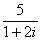

If we list all the natural numbers below 10 that are multiples of 3 or 5, we get 3, 5, 6 and 9. The sum of these multiples is 23.
Find the sum of all the multiples of 3 or 5 below 1000.
Each new term in the Fibonacci sequence is generated by adding the previous two terms. By starting with 1 and 2, the first 10 terms will be:
1, 2, 3, 5, 8, 13, 21, 34, 55, 89, ...
Find the sum of all the even-valued terms in the sequence which do not exceed one million.
The prime factors of 13195 are 5, 7, 13 and 29.
What is the largest prime factor of the number 317584931803?
A palindromic number reads the same both ways. The largest palindrome made from the product of two 2-digit numbers is 9009 = 91 × 99.
Find the largest palindrome made from the product of two 3-digit numbers.
2520 is the smallest number that can be divided by each of the numbers from 1 to 10 without any remainder.
What is the smallest number that is evenly divisible by all of the numbers from 1 to 20?
The sum of the squares of the first ten natural numbers is,
The square of the sum of the first ten natural numbers is,
Hence the difference between the sum of the squares of the first ten natural numbers and the square of the sum is 3025 − 385 = 2640.
Find the difference between the sum of the squares of the first one hundred natural numbers and the square of the sum.
By listing the first six prime numbers: 2, 3, 5, 7, 11, and 13, we can see that the 6th prime is 13.
What is the 10001st prime number?
Find the greatest product of five consecutive digits in the 1000-digit number.
73167176531330624919225119674426574742355349194934
96983520312774506326239578318016984801869478851843
85861560789112949495459501737958331952853208805511
12540698747158523863050715693290963295227443043557
66896648950445244523161731856403098711121722383113
62229893423380308135336276614282806444486645238749
30358907296290491560440772390713810515859307960866
70172427121883998797908792274921901699720888093776
65727333001053367881220235421809751254540594752243
52584907711670556013604839586446706324415722155397
53697817977846174064955149290862569321978468622482
83972241375657056057490261407972968652414535100474
82166370484403199890008895243450658541227588666881
16427171479924442928230863465674813919123162824586
17866458359124566529476545682848912883142607690042
24219022671055626321111109370544217506941658960408
07198403850962455444362981230987879927244284909188
84580156166097919133875499200524063689912560717606
05886116467109405077541002256983155200055935729725
71636269561882670428252483600823257530420752963450
A Pythagorean triplet is a set of three natural numbers, a<b<c, for which,
For example, 3² + 4² = 9 + 16 = 25 = 5².
There exists exactly one Pythagorean triplet for which a + b + c = 1000.
Find the product abc.
The sum of the primes below 10 is 2 + 3 + 5 + 7 = 17.
Find the sum of all the primes below one million.
In the 20×20 grid below, four numbers along a diagonal line have been marked in red.
08 02 22 97 38 15 00 40 00 75 04 05 07 78 52 12 50 77 91 08
49 49 99 40 17 81 18 57 60 87 17 40 98 43 69 48 04 56 62 00
81 49 31 73 55 79 14 29 93 71 40 67 53 88 30 03 49 13 36 65
52 70 95 23 04 60 11 42 69 24 68 56 01 32 56 71 37 02 36 91
22 31 16 71 51 67 63 89 41 92 36 54 22 40 40 28 66 33 13 80
24 47 32 60 99 03 45 02 44 75 33 53 78 36 84 20 35 17 12 50
32 98 81 28 64 23 67 10 26 38 40 67 59 54 70 66 18 38 64 70
67 26 20 68 02 62 12 20 95 63 94 39 63 08 40 91 66 49 94 21
24 55 58 05 66 73 99 26 97 17 78 78 96 83 14 88 34 89 63 72
21 36 23 09 75 00 76 44 20 45 35 14 00 61 33 97 34 31 33 95
78 17 53 28 22 75 31 67 15 94 03 80 04 62 16 14 09 53 56 92
16 39 05 42 96 35 31 47 55 58 88 24 00 17 54 24 36 29 85 57
86 56 00 48 35 71 89 07 05 44 44 37 44 60 21 58 51 54 17 58
19 80 81 68 05 94 47 69 28 73 92 13 86 52 17 77 04 89 55 40
04 52 08 83 97 35 99 16 07 97 57 32 16 26 26 79 33 27 98 66
88 36 68 87 57 62 20 72 03 46 33 67 46 55 12 32 63 93 53 69
04 42 16 73 38 25 39 11 24 94 72 18 08 46 29 32 40 62 76 36
20 69 36 41 72 30 23 88 34 62 99 69 82 67 59 85 74 04 36 16
20 73 35 29 78 31 90 01 74 31 49 71 48 86 81 16 23 57 05 54
01 70 54 71 83 51 54 69 16 92 33 48 61 43 52 01 89 19 67 48
The product of these numbers is 26 × 63 × 78 × 14 = 1788696.
What is the greatest product of four numbers in any direction (up, down, left, right, or diagonally) in the 20×20 grid?
The sequence of triangle numbers is generated by adding the natural numbers. So the 7th triangle number would be 1 + 2 + 3 + 4 + 5 + 6 + 7 = 28. The first ten terms would be:
1, 3, 6, 10, 15, 21, 28, 36, 45, 55, ...
Let us list the factors of the first seven triangle numbers:
1: 1
3: 1,3
6: 1,2,3,6
10: 1,2,5,10
15: 1,3,5,15
21: 1,3,7,21
28: 1,2,4,7,14,28
We can see that the 7th triangle number, 28, is the first triangle number to have over five divisors.
Which is the first triangle number to have over five-hundred divisors?
Work out the first ten digits of the sum of the following one-hundred 50-digit numbers.
The following iterative sequence is defined for the set of positive integers:
n → n/2 (n is even)
n → 3n + 1 (n is odd)
Using the rule above and starting with 13, we generate the following sequence:
It can be seen that this sequence (starting at 13 and finishing at 1) contains 10 terms. Although it has not been proved yet (Collatz Problem), it is thought that all starting numbers finish at 1.
Which starting number, under one million, produces the longest chain?
NOTE: Once the chain starts the terms are allowed to go above one million.
Starting in the top left corner of a 2×2 grid, there are 6 routes (without backtracking) to the bottom right corner.

How many routes are there through a 20×20 grid?
215 = 32768 and the sum of its digits is 3 + 2 + 7 + 6 + 8 = 26.
What is the sum of the digits of the number 21000?
If the numbers 1 to 5 are written out in words: one, two, three, four, five; there are 3 + 3 + 5 + 4 + 4 = 19 letters used in total.
If all the numbers from 1 to 1000 (one thousand) inclusive were written out in words, how many letters would be used?
By starting at the top of the triangle below and moving to adjacent numbers on the row below, the maximum total from top to bottom is 23.
3
7 5
2 4 6
8 5 9 3
That is, 3 + 7 + 4 + 9 = 23.
Find the maximum total from top to bottom of the triangle below:
75
95 64
17 47 82
18 35 87 10
20 04 82 47 65
19 01 23 75 03 34
88 02 77 73 07 63 67
99 65 04 28 06 16 70 92
41 41 26 56 83 40 80 70 33
41 48 72 33 47 32 37 16 94 29
53 71 44 65 25 43 91 52 97 51 14
70 11 33 28 77 73 17 78 39 68 17 57
91 71 52 38 17 14 91 43 58 50 27 29 48
63 66 04 68 89 53 67 30 73 16 69 87 40 31
04 62 98 27 23 09 70 98 73 93 38 53 60 04 23
NOTE: As there are only 16384 routes, it is possible to solve this problem by trying every route. However, Problem 67, is the same challenge with a triangle containing one-hundred rows; it cannot be solved by brute force, and requires a clever method! ;o)
You are given the following information, but you may prefer to do some research for yourself.
How many Sundays fell on the first of the month during the twentieth century (1 Jan 1901 to 31 Dec 2000)?
n! means n × (n − 1) × ... × 3 × 2 × 1
Find the sum of the digits in the number 100!
Let d(n) be defined as the sum of proper divisors of n (numbers less than n which divide evenly into n).
If d(a) = b and d(b) = a, where a ≠ b, then a and b are an amicable pair and each of a and b are called amicable numbers.
For example, the proper divisors of 220 are 1, 2, 4, 5, 10, 11, 20, 22, 44, 55 and 110; therefore d(220) = 284. The proper divisors of 284 are 1, 2, 4, 71 and 142; so d(284) = 220.
Evaluate the sum of all the amicable numbers under 10000.
Using names.txt (right click and 'Save Link/Target As...'), a 46K text file containing over five-thousand first names, begin by sorting it into alphabetical order. Then working out the alphabetical value for each name, multiply this value by its alphabetical position in the list to obtain a name score.
For example, when the list is sorted into alphabetical order, COLIN, which is worth 3 + 15 + 12 + 9 + 14 = 53, is the 938th name in the list. So, COLIN would obtain a score of 938 × 53 = 49714.
What is the total of all the name scores in the file?
A perfect number is a number for which the sum of its proper divisors is exactly equal to the number. For example, the sum of the proper divisors of 28 would be 1 + 2 + 4 + 7 + 14 = 28, which means that 28 is a perfect number.
A number whose proper divisors are less than the number is called deficient and a number whose proper divisors exceed the number is called abundant.
As 12 is the smallest abundant number, 1 + 2 + 3 + 4 + 6 = 16, the smallest number that can be written as the sum of two abundant numbers is 24. By mathematical analysis, it can be shown that all integers greater than 28123 can be written as the sum of two abundant numbers. However, this upper limit cannot be reduced any further by analysis even though it is known that the greatest number that cannot be expressed as the sum of two abundant numbers is less than this limit.
Find the sum of all the positive integers which cannot be written as the sum of two abundant numbers.
A permutation is an ordered arrangement of objects. For example, 3124 is one possible permutation of the digits 1, 2, 3 and 4. If all of the permutations are listed numerically or alphabetically, we call it lexicographic order. The lexicographic permutations of 0, 1 and 2 are:
012 021 102 120 201 210
What is the millionth lexicographic permutation of the digits 0, 1, 2, 3, 4, 5, 6, 7, 8 and 9?
The Fibonacci sequence is defined by the recurrence relation:
Fn = Fn−1 + Fn−2, where F1 = 1 and F2 = 1.
Hence the first 12 terms will be:
F1 = 1
F2 = 1
F3 = 2
F4 = 3
F5 = 5
F6 = 8
F7 = 13
F8 = 21
F9 = 34
F10 = 55
F11 = 89
F12 = 144
The 12th term, F12, is the first term to contain three digits.
What is the first term in the Fibonacci sequence to contain 1000 digits?
A unit fraction contains 1 in the numerator. The decimal representation of the unit fractions with denominators 2 to 10 are given:
1/2 = 0.5 1/3 = 0.(3) 1/4 = 0.25 1/5 = 0.2 1/6 = 0.1(6) 1/7 = 0.(142857) 1/8 = 0.125 1/9 = 0.(1) 1/10 = 0.1
Where 0.1(6) means 0.166666..., and has a 1-digit recurring cycle. It can be seen that 1/7 has a 6-digit recurring cycle.
Find the value of d < 1000 for which 1/d contains the longest recurring cycle in its decimal fraction part.
Euler published the remarkable quadratic formula:
n² + n + 41
It turns out that the formula will produce 40 primes for the consecutive values n = 0 to 39. However, when n = 40, 402 + 40 + 41 = 40(40 + 1) + 41 is divisible by 41, and certainly when n = 41, 41² + 41 + 41 is clearly divisible by 41.
Using computers, the incredible formula n² − 79n + 1601 was discovered, which produces 80 primes for the consecutive values n = 0 to 79. The product of the coefficients, −79 and 1601, is −126479.
Considering quadratics of the form:
n² + an + b, where |a| < 1000 and |b| < 1000
where |n| is the modulus/absolute value of n
e.g. |11| = 11 and |−4| = 4
Find the product of the coefficients, a and b, for the quadratic expression that produces the maximum number of primes for consecutive values of n, starting with n = 0.
Starting with the number 1 and moving to the right in a clockwise direction a 5 by 5 spiral is formed as follows:
21 22 23 24 25
20 7 8 9 10
19 6 1 2 11
18 5 4 3 12
17 16 15 14 13
It can be verified that the sum of both diagonals is 101.
What is the sum of both diagonals in a 1001 by 1001 spiral formed in the same way?
Consider all integer combinations of ab for 2 ≤ a ≤ 5 and 2 ≤ b ≤ 5:
22=4, 23=8, 24=16, 25=32
32=9, 33=27, 34=81, 35=243
42=16, 43=64, 44=256, 45=1024
52=25, 53=125, 54=625, 55=3125
If they are then placed in numerical order, with any repeats removed, we get the following sequence of 15 distinct terms:
4, 8, 9, 16, 25, 27, 32, 64, 81, 125, 243, 256, 625, 1024, 3125
How many distinct terms are in the sequence generated by ab for 2 ≤ a ≤ 100 and 2 ≤ b ≤ 100?
Surprisingly there are only three numbers that can be written as the sum of fourth powers of their digits:
1634 = 14 + 64 + 34 + 44
8208 = 84 + 24 + 04 + 84
9474 = 94 + 44 + 74 + 44
As 1 = 14 is not a sum it is not included.
The sum of these numbers is 1634 + 8208 + 9474 = 19316.
Find the sum of all the numbers that can be written as the sum of fifth powers of their digits.
In England the currency is made up of pound, £, and pence, p, and there are eight coins in general circulation:
1p, 2p, 5p, 10p, 20p, 50p, £1 (100p) and £2 (200p).
It is possible to make £2 in the following way:
1×£1 + 1×50p + 2×20p + 1×5p + 1×2p + 3×1p
How many different ways can £2 be made using any number of coins?
The product 7254 is unusual, as the identity, 39 × 186 = 7254, containing multiplicand, multiplier, and product is 1 through 9 pandigital.
Find the sum of all products whose multiplicand/multiplier/product identity can be written as a 1 through 9 pandigital.
The fraction 49/98 is a curious fraction, as an inexperienced mathematician in attempting to simplify it may incorrectly believe that 49/98 = 4/8, which is correct, is obtained by cancelling the 9s.
We shall consider fractions like, 30/50 = 3/5, to be trivial examples.
There are exactly four non-trivial examples of this type of fraction, less than one in value, and containing two digits in the numerator and denominator.
If the product of these four fractions is given in its lowest common terms, find the value of the denominator.
145 is a curious number, as 1! + 4! + 5! = 1 + 24 + 120 = 145.
Find the sum of all numbers which are equal to the sum of the factorial of their digits.
Note: as 1! = 1 and 2! = 2 are not sums they are not included.
The number, 197, is called a circular prime because all rotations of the digits: 197, 971, and 719, are themselves prime.
There are thirteen such primes below 100: 2, 3, 5, 7, 11, 13, 17, 31, 37, 71, 73, 79, and 97.
How many circular primes are there below one million?
The decimal number, 585 = 10010010012 (binary), is palindromic in both bases.
Find the sum of all numbers, less than one million, which are palindromic in base 10 and base 2.
(Please note that the palindromic number, in either base, may not include leading zeros.)
The number 3797 has an interesting property. Being prime itself, it is possible to continuously remove digits from left to right, and remain prime at each stage: 3797, 797, 97, and 7. Similarly we can work from right to left: 3797, 379, 37, and 3.
Find the sum of the only eleven primes that are both truncatable from left to right and right to left.
NOTE: 2, 3, 5, and 7 are not considered to be truncatable primes.
Take the number 192 and multiply it by each of 1, 2, and 3:
192 × 1 = 192
192 × 2 = 384
192 × 3 = 576
By concatenating each product we get the 1 to 9 pandigital, 192384576. We will call 192384576 the concatenated product of 192 and (1,2,3)
The same can be achieved by starting with 9 and multiplying by 1, 2, 3, 4, and 5, giving the pandigital, 918273645, which is the concatenated product of 9 and (1,2,3,4,5).
What is the largest 1 to 9 pandigital 9-digit number that can be formed as the concatenated product of an integer with (1,2, ... , n) where n > 1?
If p is the perimeter of a right angle triangle with integral length sides, {a,b,c}, there are exactly three solutions for p = 120.
{20,48,52}, {24,45,51}, {30,40,50}
For which value of p < 1000, is the number of solutions maximised?
An irrational decimal fraction is created by concatenating the positive integers:
0.123456789101112131415161718192021...
It can be seen that the 12th digit of the fractional part is 1.
If dn represents the nth digit of the fractional part, find the value of the following expression.
d1 × d10 × d100 × d1000 × d10000 × d100000 × d1000000
We shall say that an n-digit number is pandigital if it makes use of all the digits 1 to n exactly once. For example, 2143 is a 4-digit pandigital and is also prime.
What is the largest n-digit pandigital prime that exists?
The nth term of the sequence of triangle numbers is given by, tn = ½n(n+1); so the first ten triangle numbers are:
1, 3, 6, 10, 15, 21, 28, 36, 45, 55, ...
By converting each letter in a word to a number corresponding to its alphabetical position and adding these values we form a word value. For example, the word value for SKY is 19 + 11 + 25 = 55 = t10. If the word value is a triangle number then we shall call the word a triangle word.
Using words.txt (right click and 'Save Link/Target As...'), a 16K text file containing nearly two-thousand common English words, how many are triangle words?
The number, 1406357289, is a 0 to 9 pandigital number because it is made up of each of the digits 0 to 9 in some order, but it also has a rather interesting sub-string divisibility property.
Let d1 be the 1st digit, d2 be the 2nd digit, and so on. In this way, we note the following:
Find the sum of all 0 to 9 pandigital numbers with this property.
Pentagonal numbers are generated by the formula, Pn=n(3n−1)/2. The first ten pentagonal numbers are:
1, 5, 12, 22, 35, 51, 70, 92, 117, 145, ...
It can be seen that P4 + P7 = 22 + 70 = 92 = P8. However, their difference, 70 − 22 = 48, is not pentagonal.
Find the pair of pentagonal numbers, Pj and Pk, for which their sum and difference is pentagonal and D = |Pk − Pj| is minimised; what is the value of D?
Triangle, pentagonal, and hexagonal numbers are generated by the following formulae:
| Triangle | Tn=n(n+1)/2 | 1, 3, 6, 10, 15, ... | ||
| Pentagonal | Pn=n(3n−1)/2 | 1, 5, 12, 22, 35, ... | ||
| Hexagonal | Hn=n(2n−1) | 1, 6, 15, 28, 45, ... |
It can be verified that T285 = P165 = H143 = 40755.
Find the next triangle number that is also pentagonal and hexagonal.
It was proposed by Christian Goldbach that every odd composite number can be written as the sum of a prime and twice a square.
9 = 7 + 2×12
15 = 7 + 2×22
21 = 3 + 2×32
25 = 7 + 2×32
27 = 19 + 2×22
33 = 31 + 2×12
It turns out that the conjecture was false.
What is the smallest odd composite that cannot be written as the sum of a prime and twice a square?
The first two consecutive numbers to have two distinct prime factors are:
14 = 2 × 7
15 = 3 × 5
The first three consecutive numbers to have three distinct prime factors are:
644 = 2² × 7 × 23
645 = 3 × 5 × 43
646 = 2 × 17 × 19.
Find the first four consecutive integers to have four distinct primes factors. What is the first of these numbers?
The series, 11 + 22 + 33 + ... + 1010 = 10405071317.
Find the last ten digits of the series, 11 + 22 + 33 + ... + 10001000.
The arithmetic sequence, 1487, 4817, 8147, in which each of the terms increases by 3330, is unusual in two ways: (i) each of the three terms are prime, and, (ii) each of the 4-digit numbers are permutations of one another.
There are no arithmetic sequences made up of three 1-, 2-, or 3-digit primes, exhibiting this property, but there is one other 4-digit increasing sequence.
What 12-digit number do you form by concatenating the three terms in this sequence?
The prime 41, can be written as the sum of six consecutive primes:
This is the longest sum of consecutive primes that adds to a prime below one-hundred.
The longest sum of consecutive primes below one-thousand that adds to a prime, contains 21 terms, and is equal to 953.
Which prime, below one-million, can be written as the sum of the most consecutive primes?
By replacing the 1st digit of *57, it turns out that six of the possible values: 157, 257, 457, 557, 757, and 857, are all prime.
By replacing the 3rd and 4th digits of 56**3 with the same digit, this 5-digit number is the first example having seven primes, yielding the family: 56003, 56113, 56333, 56443, 56663, 56773, and 56993. Consequently 56003, being the first member of this family, is the smallest prime with this property.
Find the smallest prime which, by replacing part of the number (not necessarily adjacent digits) with the same digit, is part of an eight prime value family.
It can be seen that the number, 125874, and its double, 251748, contain exactly the same digits, but in a different order.
Find the smallest positive integer, x, such that 2x, 3x, 4x, 5x, and 6x, contain the same digits.
There are exactly ten ways of selecting three from five, 12345:
123, 124, 125, 134, 135, 145, 234, 235, 245, and 345
In combinatorics, we use the notation, 5C3 = 10.
In general,
| nCr = | n! r!(n−r)! |
,where r ≤ n, n! = n×(n−1)×...×3×2×1, and 0! = 1. |
It is not until n = 23, that a value exceeds one-million: 23C10 = 1144066.
How many values of nCr, for 1 ≤ n ≤ 100, are greater than one-million?
In the card game poker, a hand consists of five cards and are ranked, from lowest to highest, in the following way:
The cards are valued in the order:
2, 3, 4, 5, 6, 7, 8, 9, 10, Jack, Queen, King, Ace.
If two players have the same ranked hands then the rank made up of the highest value wins; for example, a pair of eights beats a pair of fives (see example 1 below). But if two ranks tie, for example, both players have a pair of queens, then highest cards in each hand are compared (see example 4 below); if the highest cards tie then the next highest cards are compared, and so on.
Consider the following four hands dealt to two players:
| Hand | Player 1 | Player 2 | Winner | |||
| 1 | 5H 5C 6S 7S KD Pair of Fives | 2C 3S 8S 8D TD Pair of Eights | Player 2 | |||
| 2 | 5D 8C 9S JS AC Highest card Ace | 2C 5C 7D 8S QH Highest card Queen | Player 1 | |||
| 3 | 2D 9C AS AH AC Three Aces | 3D 6D 7D TD QD Flush with Diamonds | Player 2 | |||
| 4 | 4D 6S 9H QH QC Pair of Queens Highest card Nine | 3D 6D 7H QD QS Pair of Queens Highest card Seven | Player 1 | |||
| 5 | 2H 2D 4C 4D 4S Full House With Three Fours | 3C 3D 3S 9S 9D Full House with Three Threes | Player 1 |
The file, poker.txt, contains one-thousand random hands dealt to two players. Each line of the file contains ten cards (separated by a single space): the first five are player one's cards and the last five are player two's cards. You can assume that all hands are valid (no invalid characters or repeated cards), each player's hand is in no specific order, and in each hand there is a clear winner.
How many hands does player one win?
If we take 47, reverse and add, 47 + 74 = 121, which is palindromic.
Not all numbers produce palindromes so quickly. For example,
349 + 943 = 1292,
1292 + 2921 = 4213
4213 + 3124 = 7337
That is, 349 took three iterations to arrive at a palindrome.
Although no one has proved it yet, it is thought that some numbers, like 196, never produce a palindrome. A number that never forms a palindrome through the reverse and add process is called a Lychrel number. Due to the theoretical nature of these numbers, and for the purpose of this problem, we shall assume that a number is Lychrel until proven otherwise. In addition you are given that for every number below ten-thousand, it will either (i) become a palindrome in less than fifty iterations, or, (ii) no one, with all the computing power that exists, has managed so far to map it to a palindrome. In fact, 10677 is the first number to be shown to require over fifty iterations before producing a palindrome: 4668731596684224866951378664 (53 iterations, 28-digits).
Surprisingly, there are palindromic numbers that are themselves Lychrel numbers; the first example is 4994.
How many Lychrel numbers are there below ten-thousand?
NOTE: Wording was modified slightly on 24 April 2007 to emphasise the theoretical nature of Lychrel numbers.
A googol (10100) is a massive number: one followed by one-hundred zeros; 100100 is almost unimaginably large: one followed by two-hundred zeros. Despite their size, the sum of the digits in each number is only 1.
Considering natural numbers of the form, ab, where a, b < 100, what is the maximum digital sum?
It is possible to show that the square root of two can be expressed as an infinite continued fraction.
√ 2 = 1 + 1/(2 + 1/(2 + 1/(2 + ... ))) = 1.414213...
By expanding this for the first four iterations, we get:
1 + 1/2 = 3/2 = 1.5
1 + 1/(2 + 1/2) = 7/5 = 1.4
1 + 1/(2 + 1/(2 + 1/2)) = 17/12 = 1.41666...
1 + 1/(2 + 1/(2 + 1/(2 + 1/2))) = 41/29 = 1.41379...
The next three expansions are 99/70, 239/169, and 577/408, but the eighth expansion, 1393/985, is the first example where the number of digits in the numerator exceeds the number of digits in the denominator.
In the first one-thousand expansions, how many fractions contain a numerator with more digits than denominator?
Starting with 1 and spiralling anticlockwise in the following way, a square spiral with side length 7 is formed.
37 36 35 34 33 32 31
38 17 16 15 14 13 30
39 18 5 4 3 12 29
40 19 6 1 2 11 28
41 20 7 8 9 10 27
42 21 22 23 24 25 26
43 44 45 46 47 48 49
It is interesting to note that the odd squares lie along the bottom right diagonal, but what is more interesting is that 8 out of the 13 numbers lying along both diagonals are prime; that is, a ratio of 8/13 ≈ 62%.
If one complete new layer is wrapped around the spiral above, a square spiral with side length 9 will be formed. If this process is continued, what is the side length of the square spiral for which the ratio of primes along both diagonals first falls below 10%?
Each character on a computer is assigned a unique code and the preferred standard is ASCII (American Standard Code for Information Interchange). For example, uppercase A = 65, asterisk (*) = 42, and lowercase k = 107.
A modern encryption method is to take a text file, convert the bytes to ASCII, then XOR each byte with a given value, taken from a secret key. The advantage with the XOR function is that using the same encryption key on the cipher text, restores the plain text; for example, 65 XOR 42 = 107, then 107 XOR 42 = 65.
For unbreakable encryption, the key is the same length as the plain text message, and the key is made up of random bytes. The user would keep the encrypted message and the encryption key in different locations, and without both "halves", it is impossible to decrypt the message.
Unfortunately, this method is impractical for most users, so the modified method is to use a password as a key. If the password is shorter than the message, which is likely, the key is repeated cyclically throughout the message. The balance for this method is using a sufficiently long password key for security, but short enough to be memorable.
Your task has been made easy, as the encryption key consists of three lower case characters. Using cipher1.txt (right click and 'Save Link/Target As...'), a file containing the encrypted ASCII codes, and the knowledge that the plain text must contain common English words, decrypt the message and find the sum of the ASCII values in the original text.
The primes 3, 7, 109, and 673, are quite remarkable. By taking any two primes and concatenating them in any order the result will always be prime. For example, taking 7 and 109, both 7109 and 1097 are prime. The sum of these four primes, 792, represents the lowest sum for a set of four primes with this property.
Find the lowest sum for a set of five primes for which any two primes concatenate to produce another prime.
Triangle, square, pentagonal, hexagonal, heptagonal, and octagonal numbers are all figurate (polygonal) numbers and are generated by the following formulae:
| Triangle | P3,n=n(n+1)/2 | 1, 3, 6, 10, 15, ... | ||
| Square | P4,n=n2 | 1, 4, 9, 16, 25, ... | ||
| Pentagonal | P5,n=n(3n−1)/2 | 1, 5, 12, 22, 35, ... | ||
| Hexagonal | P6,n=n(2n−1) | 1, 6, 15, 28, 45, ... | ||
| Heptagonal | P7,n=n(5n−3)/2 | 1, 7, 18, 34, 55, ... | ||
| Octagonal | P8,n=n(3n−2) | 1, 8, 21, 40, 65, ... |
The ordered set of three 4-digit numbers: 8128, 2882, 8281, has three interesting properties.
Find the sum of the only ordered set of six cyclic 4-digit numbers for which each polygonal type: triangle, square, pentagonal, hexagonal, heptagonal, and octagonal, is represented by a different number in the set.
The cube, 41063625 (3453), can be permuted to produce two other cubes: 56623104 (3843) and 66430125 (4053). In fact, 41063625 is the smallest cube which has exactly three permutations of its digits which are also cube.
Find the smallest cube for which exactly five permutations of its digits are cube.
The 5-digit number, 16807=75, is also a fifth power. Similarly, the 9-digit number, 134217728=89, is a ninth power.
How many n-digit positive integers exist which are also an nth power?
All square roots are periodic when written as continued fractions and can be written in the form:
| √N = a0 + | 1 |
||
| a1 + | 1 |
||
| a2 + | 1 |
||
| a3 + ... | |||
For example, let us consider √23:
| √23 = 4 + √23 — 4 = 4 + | 1 |
= 4 + | 1 |
|
1 √23—4 |
1 + | √23 – 3 7 |
||
If we continue we would get the following expansion:
| √23 = 4 + | 1 |
|||
| 1 + | 1 |
|||
| 3 + | 1 |
|||
| 1 + | 1 |
|||
| 8 + ... | ||||
The process can be summarised as follows:
| a0 = 4, | 1 √23—4 |
= | √23+4 7 |
= 1 + | √23—3 7 |
|
| a1 = 1, | 7 √23—3 |
= | 7(√23+3) 14 |
= 3 + | √23—3 2 |
|
| a2 = 3, | 2 √23—3 |
= | 2(√23+3) 14 |
= 1 + | √23—4 7 |
|
| a3 = 1, | 7 √23—4 |
= | 7(√23+4) 7 |
= 8 + | √23—4 | |
| a4 = 8, | 1 √23—4 |
= | √23+4 7 |
= 1 + | √23—3 7 |
|
| a5 = 1, | 7 √23—3 |
= | 7(√23+3) 14 |
= 3 + | √23—3 2 |
|
| a6 = 3, | 2 √23—3 |
= | 2(√23+3) 14 |
= 1 + | √23—4 7 |
|
| a7 = 1, | 7 √23—4 |
= | 7(√23+4) 7 |
= 8 + | √23—4 |
It can be seen that the sequence is repeating. For conciseness, we use the notation √23 = [4;(1,3,1,8)], to indicate that the block (1,3,1,8) repeats indefinitely.
The first ten continued fraction representations of (irrational) square roots are:
√2=[1;(2)], period=1
√3=[1;(1,2)], period=2
√5=[2;(4)], period=1
√6=[2;(2,4)], period=2
√7=[2;(1,1,1,4)], period=4
√8=[2;(1,4)], period=2
√10=[3;(6)], period=1
√11=[3;(3,6)], period=2
√12= [3;(2,6)], period=2
√13=[3;(1,1,1,1,6)], period=5
Exactly four continued fractions, for N ≤ 13, have an odd period.
How many continued fractions for N ≤ 10000 have an odd period?
The square root of 2 can be written as an infinite continued fraction.
| √2 = 1 + | 1 |
|||
| 2 + | 1 |
|||
| 2 + | 1 |
|||
| 2 + | 1 |
|||
| 2 + ... | ||||
The infinite continued fraction can be written, √2 = [1;(2)], (2) indicates that 2 repeats ad infinitum. In a similar way, √23 = [4;(1,3,1,8)].
It turns out that the sequence of partial values of continued fractions for square roots provide the best rational approximations. Let us consider the convergents for √2.
| 1 + | 1 |
= 3/2 |
2 |
| 1 + | 1 |
= 7/5 | |
| 2 + | 1 |
||
2 |
|||
| 1 + | 1 |
= 17/12 | ||
| 2 + | 1 |
|||
| 2 + | 1 |
|||
2 |
||||
| 1 + | 1 |
= 41/29 | |||
| 2 + | 1 |
||||
| 2 + | 1 |
||||
| 2 + | 1 |
||||
2 |
|||||
Hence the sequence of the first ten convergents for √2 are:
What is most surprising is that the important mathematical constant,
e = [2; 1,2,1, 1,4,1, 1,6,1 , ... , 1,2k,1, ...].
The first ten terms in the sequence of convergents for e are:
The sum of digits in the numerator of the 10th convergent is 1+4+5+7=17.
Find the sum of digits in the numerator of the 100th convergent of the continued fraction for e.
Consider quadratic Diophantine equations of the form:
x2 – Dy2 = 1
For example, when D=13, the minimal solution in x is 6492 – 13×1802 = 1.
It can be assumed that there are no solutions in positive integers when D is square.
By finding minimal solutions in x for D = {2, 3, 5, 6, 7}, we obtain the following:
32 – 2×22 = 1
22 – 3×12 = 1
92 – 5×42 = 1
52 – 6×22 = 1
82 – 7×32 = 1
Hence, by considering minimal solutions in x for D ≤ 7, the largest x is obtained when D=5.
Find the value of D ≤ 1000 in minimal solutions of x for which the largest value of x is obtained.
By starting at the top of the triangle below and moving to adjacent numbers on the row below, the maximum total from top to bottom is 23.
3
7 5
2 4 6
8 5 9 3
That is, 3 + 7 + 4 + 9 = 23.
Find the maximum total from top to bottom in triangle.txt (right click and 'Save Link/Target As...'), a 15K text file containing a triangle with one-hundred rows.
NOTE: This is a much more difficult version of Problem 18. It is not possible to try every route to solve this problem, as there are 299 altogether! If you could check one trillion (1012) routes every second it would take over twenty billion years to check them all. There is an efficient algorithm to solve it. ;o)
Consider the following "magic" 3-gon ring, filled with the numbers 1 to 6, and each line adding to nine.

Working clockwise, and starting from the group of three with the numerically lowest external node (4,3,2 in this example), each solution can be described uniquely. For example, the above solution can be described by the set: 4,3,2; 6,2,1; 5,1,3.
It is possible to complete the ring with four different totals: 9, 10, 11, and 12. There are eight solutions in total.
| Total | Solution Set |
| 9 | 4,2,3; 5,3,1; 6,1,2 |
| 9 | 4,3,2; 6,2,1; 5,1,3 |
| 10 | 2,3,5; 4,5,1; 6,1,3 |
| 10 | 2,5,3; 6,3,1; 4,1,5 |
| 11 | 1,4,6; 3,6,2; 5,2,4 |
| 11 | 1,6,4; 5,4,2; 3,2,6 |
| 12 | 1,5,6; 2,6,4; 3,4,5 |
| 12 | 1,6,5; 3,5,4; 2,4,6 |
By concatenating each group it is possible to form 9-digit strings; the maximum string for a 3-gon ring is 432621513.
Using the numbers 1 to 10, and depending on arrangements, it is possible to form 16- and 17-digit strings. What is the maximum 16-digit string for a "magic" 5-gon ring?

Euler's Totient function, φ(n) [sometimes called the phi function], is used to determine the number of numbers less than n which are relatively prime to n. For example, as 1, 2, 4, 5, 7, and 8, are all less than nine and relatively prime to nine, φ(9)=6.
| n | Relatively Prime | φ(n) | n/φ(n) |
| 2 | 1 | 1 | 2 |
| 3 | 1,2 | 2 | 1.5 |
| 4 | 1,3 | 2 | 2 |
| 5 | 1,2,3,4 | 4 | 1.25 |
| 6 | 1,5 | 2 | 3 |
| 7 | 1,2,3,4,5,6 | 6 | 1.1666... |
| 8 | 1,3,5,7 | 4 | 2 |
| 9 | 1,2,4,5,7,8 | 6 | 1.5 |
| 10 | 1,3,7,9 | 4 | 2.5 |
It can be seen that n=6 produces a maximum n/φ(n) for n ≤ 10.
Find the value of n ≤ 1,000,000 for which n/φ(n) is a maximum.
Euler's Totient function, φ(n) [sometimes called the phi function], is used to determine the number of numbers less than n which are relatively prime to n. For example, as 1, 2, 4, 5, 7, and 8, are all less than nine and relatively prime to nine, φ(9)=6.
Interestingly, φ(87109)=79180, and it can be seen that 87109 is a permutation of 79180.
Find the value of n, below ten million, for which φ(n) is a permutation of n and the ratio n/φ(n) produces a minimum.
Consider the fraction, n/d, where n and d are positive integers. If n<d and HCF(n,d)=1, it is called a reduced proper fraction.
If we list the set of reduced proper fractions for d ≤ 8 in ascending order of size, we get:
1/8, 1/7, 1/6, 1/5, 1/4, 2/7, 1/3, 3/8, 2/5, 3/7, 1/2, 4/7, 3/5, 5/8, 2/3, 5/7, 3/4, 4/5, 5/6, 6/7, 7/8
It can be seen that 2/5 is the fraction immediately to the left of 3/7.
By listing the set of reduced proper fractions for d ≤ 1,000,000 in ascending order of size, find the numerator of the fraction immediately to the left of 3/7.
Consider the fraction, n/d, where n and d are positive integers. If n<d and HCF(n,d)=1, it is called a reduced proper fraction.
If we list the set of reduced proper fractions for d ≤ 8 in ascending order of size, we get:
1/8, 1/7, 1/6, 1/5, 1/4, 2/7, 1/3, 3/8, 2/5, 3/7, 1/2, 4/7, 3/5, 5/8, 2/3, 5/7, 3/4, 4/5, 5/6, 6/7, 7/8
It can be seen that there are 21 elements in this set.
How many elements would be contained in the set of reduced proper fractions for d ≤ 1,000,000?
Consider the fraction, n/d, where n and d are positive integers. If n<d and HCF(n,d)=1, it is called a reduced proper fraction.
If we list the set of reduced proper fractions for d ≤ 8 in ascending order of size, we get:
1/8, 1/7, 1/6, 1/5, 1/4, 2/7, 1/3, 3/8, 2/5, 3/7, 1/2, 4/7, 3/5, 5/8, 2/3, 5/7, 3/4, 4/5, 5/6, 6/7, 7/8
It can be seen that there are 3 fractions between 1/3 and 1/2.
How many fractions lie between 1/3 and 1/2 in the sorted set of reduced proper fractions for d ≤ 10,000?
The number 145 is well known for the property that the sum of the factorial of its digits is equal to 145:
1! + 4! + 5! = 1 + 24 + 120 = 145
Perhaps less well known is 169, in that it produces the longest chain of numbers that link back to 169; it turns out that there are only three such loops that exist:
169 → 363601 → 1454 → 169
871 → 45361 → 871
872 → 45362 → 872
It is not difficult to prove that EVERY starting number will eventually get stuck in a loop. For example,
69 → 363600 → 1454 → 169 → 363601 (→ 1454)
78 → 45360 → 871 → 45361 (→ 871)
540 → 145 (→ 145)
Starting with 69 produces a chain of five non-repeating terms, but the longest non-repeating chain with a starting number below one million is sixty terms.
How many chains, with a starting number below one million, contain exactly sixty non-repeating terms?
It turns out that 12 cm is the smallest length of wire can be bent to form a right angle triangle in exactly one way, but there are many more examples.
12 cm: (3,4,5)
24 cm: (6,8,10)
30 cm: (5,12,13)
36 cm: (9,12,15)
40 cm: (8,15,17)
48 cm: (12,16,20)
In contrast, some lengths of wire, like 20 cm, cannot be bent to form a right angle triangle, and other lengths allow more than one solution to be found; for example, using 120 cm it is possible to form exactly three different right angle triangles.
120 cm: (30,40,50), (20,48,52), (24,45,51)
Given that L is the length of the wire, for how many values of L ≤ 1,000,000 can exactly one right angle triangle be formed?
It is possible to write five as a sum in exactly six different ways:
4 + 1
3 + 2
3 + 1 + 1
2 + 2 + 1
2 + 1 + 1 + 1
1 + 1 + 1 + 1 + 1
How many different ways can one hundred be written as a sum of at least two positive integers?
It is possible to write ten as the sum of primes in exactly five different ways:
7 + 3
5 + 5
5 + 3 + 2
3 + 3 + 2 + 2
2 + 2 + 2 + 2 + 2
What is the first value which can be written as the sum of primes in over five thousand different ways?
Let p(n) represent the number of different ways in which n coins can be separated into piles. For example, five coins can separated into piles in exactly seven different ways, so p(5)=7.
| OOOOO |
| OOOO O |
| OOO OO |
| OOO O O |
| OO OO O |
| OO O O O |
| O O O O O |
Find the least value of n for which p(n) is divisible by one million.
A common security method used for online banking is to ask the user for three random characters from a passcode. For example, if the passcode was 531278, they may asked for the 2nd, 3rd, and 5th characters; the expected reply would be: 317.
The text file, keylog.txt, contains fifty successful login attempts.
Given that the three characters are always asked for in order, analyse the file so as to determine the shortest possible secret passcode of unknown length.
It is well known that if the square root of a natural number is not an integer, then it is irrational. The decimal expansion of such square roots is infinite without any repeating pattern at all.
The square root of two is 1.41421356237309504880..., and the digital sum of the first one hundred decimal digits is 475.
For the first one hundred natural numbers, find the total of the digital sums of the first one hundred decimal digits for all the irrational square roots.
In the 5 by 5 matrix below, the minimal path sum from the top left to the bottom right, by only moving to the right and down, is indicated in red and is equal to 2427.
|
Find the minimal path sum, in matrix.txt (right click and 'Save Link/Target As...'), a 31K text file containing a 80 by 80 matrix, from the top left to the bottom right by only moving right and down.
NOTE: This problem is a more challenging version of Problem 81.
The minimal path sum in the 5 by 5 matrix below, by starting in any cell in the left column and finishing in any cell in the right column, and only moving up, down, and right, is indicated in red; the sum is equal to 994.
|
Find the minimal path sum, in matrix.txt (right click and 'Save Link/Target As...'), a 31K text file containing a 80 by 80 matrix, from the left column to the right column.
NOTE: This problem is a significantly more challenging version of Problem 81.
In the 5 by 5 matrix below, the minimal path sum from the top left to the bottom right, by moving left, right, up, and down, is indicated in red and is equal to 2297.
|
Find the minimal path sum, in matrix.txt (right click and 'Save Link/Target As...'), a 31K text file containing a 80 by 80 matrix, from the top left to the bottom right by moving left, right, up, and down.
In the game, Monopoly, the standard board is set up in the following way:
| GO | A1 | CC1 | A2 | T1 | R1 | B1 | CH1 | B2 | B3 | JAIL |
| H2 | C1 | |||||||||
| T2 | U1 | |||||||||
| H1 | C2 | |||||||||
| CH3 | C3 | |||||||||
| R4 | R2 | |||||||||
| G3 | D1 | |||||||||
| CC3 | CC2 | |||||||||
| G2 | D2 | |||||||||
| G1 | D3 | |||||||||
| G2J | F3 | U2 | F2 | F1 | R3 | E3 | E2 | CH2 | E1 | FP |
A player starts on the GO square and adds the scores on two 6-sided dice to determine the number of squares they advance in a clockwise direction. Without any further rules we would expect to visit each square with equal probability: 2.5%. However, landing on G2J (Go To Jail), CC (community chest), and CH (chance) changes this distribution.
In addition to G2J, and one card from each of CC and CH, that orders the player to go to directly jail, if a player rolls three consecutive doubles, they do not advance the result of their 3rd roll. Instead they proceed directly to jail.
At the beginning of the game, the CC and CH cards are shuffled. When a player lands on CC or CH they take a card from the top of the respective pile and, after following the instructions, it is returned to the bottom of the pile. There are sixteen cards in each pile, but for the purpose of this problem we are only concerned with cards that order a movement; any instruction not concerned with movement will be ignored and the player will remain on the CC/CH square.
The heart of this problem concerns the likelihood of visiting a particular square. That is, the probability of finishing at that square after a roll. For this reason it should be clear that, with the exception of G2J for which the probability of finishing on it is zero, the CH squares will have the lowest probabilities, as 5/8 request a movement to another square, and it is the final square that the player finishes at on each roll that we are interested in. We shall make no distinction between "Just Visiting" and being sent to JAIL, and we shall also ignore the rule about requiring a double to "get out of jail", assuming that they pay to get out on their next turn.
By starting at GO and numbering the squares sequentially from 00 to 39 we can concatenate these two-digit numbers to produce strings that correspond with sets of squares.
Statistically it can be shown that the three most popular squares, in order, are JAIL (6.24%) = Square 10, E3 (3.18%) = Square 24, and GO (3.09%) = Square 00. So these three most popular squares can be listed with the six-digit modal string: 102400.
If, instead of using two 6-sided dice, two 4-sided dice are used, find the six-digit modal string.
By counting carefully it can be seen that a rectangular grid measuring 3 by 2 contains eighteen rectangles:

Although there exists no rectangular grid that contains exactly two million rectangles, find the area of the grid with the nearest solution.
A spider, S, sits in one corner of a cuboid room, measuring 6 by 5 by 3, and a fly, F, sits in the opposite corner. By travelling on the surfaces of the room the shortest "straight line" distance from S to F is 10 and the path is shown on the diagram.

However, there are up to three "shortest" path candidates for any given cuboid and the shortest route is not always integer.
By considering all cuboid rooms up to a maximum size of M by M by M, there are exactly 2060 cuboids for which the shortest distance is integer when M=100, and this is the least value of M for which the number of solutions first exceeds two thousand; the number of solutions is 1975 when M=99.
Find the least value of M such that the number of solutions first exceeds one million.
The smallest number expressible as the sum of a prime square, prime cube, and prime fourth power is 28. In fact, there are exactly four numbers below fifty that can be expressed in such a way:
28 = 22 + 23 + 24
33 = 32 + 23 + 24
49 = 52 + 23 + 24
47 = 22 + 33 + 24
How many numbers below fifty million can be expressed as the sum of a prime square, prime cube, and prime fourth power?
A natural number, N, that can be written as the sum and product of a given set of at least two natural numbers, {a1, a2, ... , ak} is called a product-sum number: N = a1 + a2 + ... + ak = a1 × a2 × ... × ak.
For example, 6 = 1 + 2 + 3 = 1 × 2 × 3.
For a given set of size, k, we shall call the smallest N with this property a minimal product-sum number. The minimal product-sum numbers for sets of size, k = 2, 3, 4, 5, and 6 are as follows.
k=2: 4 = 2 × 2 = 2 + 2
k=3: 6 = 1 × 2 × 3 = 1 + 2 + 3
k=4: 8 = 1 × 1 × 2 × 4 = 1 + 1 + 2 + 4
k=5: 8 = 1 × 1 × 2 × 2 × 2 = 1 + 1 + 2 + 2 + 2
k=6: 12 = 1 × 1 × 1 × 1 × 2 × 6 = 1 + 1 + 1 + 1 + 2 + 6
Hence for 2≤k≤6, the sum of all the minimal product-sum numbers is 4+6+8+12 = 30; note that 8 is only counted once in the sum.
In fact, as the complete set of minimal product-sum numbers for 2≤k≤12 is {4, 6, 8, 12, 15, 16}, the sum is 61.
What is the sum of all the minimal product-sum numbers for 2≤k≤12000?
The rules for writing Roman numerals allow for many ways of writing each number (see FAQ: Roman Numerals). However, there is always a "best" way of writing a particular number.
For example, the following represent all of the legitimate ways of writing the number sixteen:
IIIIIIIIIIIIIIII
VIIIIIIIIIII
VVIIIIII
XIIIIII
VVVI
XVI
The last example being considered the most efficient, as it uses the least number of numerals.
The 11K text file, roman.txt (right click and 'Save Link/Target As...'), contains one thousand numbers written in valid, but not necessarily minimal, Roman numerals; that is, they are arranged in descending units and obey the subtractive pair rule (see FAQ for the definitive rules for this problem).
Find the number of characters saved by writing each of these in their minimal form.
Note: You can assume that all the Roman numerals in the file contain no more than four consecutive identical units.
Each of the six faces on a cube has a different digit (0 to 9) written on it; the same is done to a second cube. By placing the two cubes side-by-side in different positions we can form a variety of 2-digit numbers.
For example, the square number 64 could be formed:

In fact, by carefully choosing the digits on both cubes it is possible to display all of the square numbers below one-hundred: 01, 04, 09, 16, 25, 36, 49, 64, and 81.
For example, one way this can be achieved is by placing {0, 5, 6, 7, 8, 9} on one cube and {1, 2, 3, 4, 8, 9} on the other cube.
However, for this problem we shall allow the 6 or 9 to be turned upside-down so that an arrangement like {0, 5, 6, 7, 8, 9} and {1, 2, 3, 4, 6, 7} allows for all nine square numbers to be displayed; otherwise it would be impossible to obtain 09.
In determining a distinct arrangement we are interested in the digits on each cube, not the order.
{1, 2, 3, 4, 5, 6} is equivalent to {3, 6, 4, 1, 2, 5}
{1, 2, 3, 4, 5, 6} is distinct from {1, 2, 3, 4, 5, 9}
But because we are allowing 6 and 9 to be reversed, the two distinct sets in the last example both represent the extended set {1, 2, 3, 4, 5, 6, 9} for the purpose of forming 2-digit numbers.
How many distinct arrangements of the two cubes allow for all of the square numbers to be displayed?
The points P (x1, y1) and Q (x2, y2) are plotted at integer co-ordinates and are joined to the origin, O(0,0), to form ΔOPQ.

There are exactly fourteen triangles containing a right angle that
can be formed when each co-ordinate lies between 0 and 2 inclusive;
that is,
0 ≤ x1, y1, x2, y2 ≤ 2.

Given that 0 ≤ x1, y1, x2, y2 ≤ 50, how many right triangles can be formed?
A number chain is created by continuously adding the square of the digits in a number to form a new number until it has been seen before.
For example,
44 → 32 → 13 → 10 → 1 → 1
85 → 89 → 145 → 42 → 20 → 4 → 16 → 37 → 58 → 89
Therefore any chain that arrives at 1 or 89 will become stuck in an endless loop. What is most amazing is that EVERY starting number will eventually arrive at 1 or 89.
How many starting numbers below ten million will arrive at 89?
By using each of the digits from the set, {1, 2, 3, 4}, exactly once, and making use of the four arithmetic operations (+, −, *, /) and brackets/parentheses, it is possible to form different positive integer targets.
For example,
8 = (4 * (1 + 3)) / 2
14 = 4 * (3 + 1 / 2)
19 = 4 * (2 + 3) − 1
36 = 3 * 4 * (2 + 1)
Note that concatenations of the digits, like 12 + 34, are not allowed.
Using the set, {1, 2, 3, 4}, it is possible to obtain thirty-one different target numbers of which 36 is the maximum, and each of the numbers 1 to 28 can be obtained before encountering the first non-expressible number.
Find the set of four distinct digits, a < b < c < d, for which the longest set of consecutive positive integers, 1 to n, can be obtained, giving your answer as a string: abcd.
It is easily proved that no equilateral triangle exists with integral length sides and integral area. However, the almost equilateral triangle 5-5-6 has an area of 12 square units.
We shall define an almost equilateral triangle to be a triangle for which two sides are equal and the third differs by no more than one unit.
Find the sum of the perimeters of every almost equilateral triangle with integral side lengths and area and whose perimeters do not exceed one billion (1,000,000,000).
The proper divisors of a number are all the divisors excluding the number itself. For example, the proper divisors of 28 are 1, 2, 4, 7, and 14. As the sum of these divisors is equal to 28, we call it a perfect number.
Interestingly the sum of the proper divisors of 220 is 284 and the sum of the proper divisors of 284 is 220, forming a chain of two numbers. For this reason, 220 and 284 are called an amicable pair.
Perhaps less well known are longer chains. For example, starting with 12496, we form an amicable chain of five numbers:
12496 → 14288 → 15472 → 14536 → 14264 (→ 12496 → ...)
Find the smallest member of the longest amicable chain with no element exceeding one million.
Su Doku (Japanese meaning number place) is the name given to a popular puzzle concept. Its origin is unclear, but credit must be attributed to Leonhard Euler who invented a similar, and much more difficult, puzzle idea called Latin Squares. The objective of Su Doku puzzles, however, is to replace the blanks (or zeros) in a 9 by 9 grid in such that each row, column, and 3 by 3 box contains each of the digits 1 to 9. Below is an example of a typical starting puzzle grid and its solution grid.
|
|
A well constructed Su Doku puzzle has a unique solution and can be solved by logic, although it may be necessary to employ "guess and test" methods in order to eliminate options (there is much contested opinion over this). The complexity of the search determines the difficulty of the puzzle; the example above is considered easy because it can be solved by straight forward direct deduction.
The 6K text file, sudoku.txt (right click and 'Save Link/Target As...'), contains fifty different Su Doku puzzles ranging in difficulty, but all with unique solutions (the first puzzle in the file is the example above).
By solving all fifty puzzles find the sum of the 3-digit numbers found in the top left corner of each solution grid; for example, 483 is the 3-digit number found in the top left corner of the solution grid above.
The first known prime found to exceed one million digits was discovered in 1999, and is a Mersenne prime of the form 26972593−1; it contains exactly 2,098,960 digits. Subsequently other Mersenne primes, of the form 2p−1, have been found which contain more digits.
However, in 2004 there was found a massive non-Mersenne prime which contains 2,357,207 digits: 28433×27830457+1.
Find the last ten digits of this prime number.
By replacing each of the letters in the word CARE with 1, 2, 9, and 6 respectively, we form a square number: 1296 = 362. What is remarkable is that, by using the same digital substitutions, the anagram, RACE, also forms a square number: 9216 = 962. We shall call CARE (and RACE) a square anagram word pair and specify further that leading zeroes are not permitted, neither may a different letter have the same digital value as another letter.
Using words.txt (right click and 'Save Link/Target As...'), a 16K text file containing nearly two-thousand common English words, find all the square anagram word pairs (a palindromic word is NOT considered to be an anagram of itself).
What is the largest square number formed by any member of such a pair?
NOTE: All anagrams formed must be contained in the given text file.
Comparing two numbers written in index form like 211 and 37 is not difficult, as any calculator would confirm that 211 = 2048 < 37 = 2187.
However, confirming that 632382518061 > 519432525806 would be much more difficult, as both numbers contain over three million digits.
Using base_exp.txt (right click and 'Save Link/Target As...'), a 22K text file containing one thousand lines with a base/exponent pair on each line, determine which line number has the greatest numerical value.
NOTE: The first two lines in the file represent the numbers in the example given above.
If a box contains twenty-one coloured discs, composed of fifteen blue discs and six red discs, and two discs were taken at random, it can be seen that the probability of taking two blue discs, P(BB) = (15/21)×(14/20) = 1/2.
The next such arrangement, for which there is exactly 50% chance of taking two blue discs at random, is a box containing eighty-five blue discs and thirty-five red discs.
By finding the first arrangement to contain over 1012 = 1,000,000,000,000 discs in total, determine the number of blue discs that the box would contain.
If we are presented with the first k terms of a sequence it is impossible to say with certainty the value of the next term, as there are infinitely many polynomial functions that can model the sequence.
As an example, let us consider the sequence of cube numbers. This is defined by the generating function, un = n3: 1, 8, 27, 64, 125, 216, ...
Suppose we were only given the first two terms of this sequence. Working on the principle that "simple is best" we should assume a linear relationship and predict the next term to be 15 (common difference 7). Even if we were presented with the first three terms, by the same principle of simplicity, a quadratic relationship should be assumed.
We shall define OP(k, n) to be the nth term of the optimum polynomial generating function for the first k terms of a sequence. It should be clear that OP(k, n) will accurately generate the terms of the sequence for n ≤ k, and potentially the first incorrect term (FIT) will be OP(k, k+1); in which case we shall call it a bad OP (BOP).
As a basis, if we were only given the first term of sequence, it would be most sensible to assume constancy; that is, for n ≥ 2, OP(1, n) = u1.
Hence we obtain the following OPs for the cubic sequence:
| OP(1, n) = 1 | 1, 1, 1, 1, ... |
| OP(2, n) = 7n−6 | 1, 8, 15, ... |
| OP(3, n) = 6n2−11n+6 | 1, 8, 27, 58, ... |
| OP(4, n) = n3 | 1, 8, 27, 64, 125, ... |
Clearly no BOPs exist for k ≥ 4.
By considering the sum of FITs generated by the BOPs (indicated in red above), we obtain 1 + 15 + 58 = 74.
Consider the following tenth degree polynomial generating function:
un = 1 − n + n2 − n3 + n4 − n5 + n6 − n7 + n8 − n9 + n10
Find the sum of FITs for the BOPs.
Three distinct points are plotted at random on a Cartesian plane, for which -1000 ≤ x, y ≤ 1000, such that a triangle is formed.
Consider the following two triangles:
A(-340,495), B(-153,-910), C(835,-947)
X(-175,41), Y(-421,-714), Z(574,-645)
It can be verified that triangle ABC contains the origin, whereas triangle XYZ does not.
Using triangles.txt (right click and 'Save Link/Target As...'), a 27K text file containing the co-ordinates of one thousand "random" triangles, find the number of triangles for which the interior contains the origin.
NOTE: The first two examples in the file represent the triangles in the example given above.
Let S(A) represent the sum of elements in set A of size n. We shall call it a special sum set if for any two non-empty disjoint subsets, B and C, the following properties are true:
If S(A) is minimised for a given n, we shall call it an optimum special sum set. The first five optimum special sum sets are given below.
n = 1: {1}
n = 2: {1, 2}
n = 3: {2, 3, 4}
n = 4: {3, 5, 6, 7}
n = 5: {6, 9, 11, 12, 13}
It seems that for a given optimum set, A = {a1, a2, ... , an}, the next optimum set is of the form B = {b, a1+b, a2+b, ... ,an+b}, where b is the "middle" element on the previous row.
By applying this "rule" we would expect the optimum set for n = 6 to be A = {11, 17, 20, 22, 23, 24}, with S(A) = 117. However, this is not the optimum set, as we have merely applied an algorithm to provide a near optimum set. The optimum set for n = 6 is A = {11, 18, 19, 20, 22, 25}, with S(A) = 115 and corresponding set string: 111819202225.
Given that A is an optimum special sum set for n = 7, find its set string.
The Fibonacci sequence is defined by the recurrence relation:
Fn = Fn−1 + Fn−2, where F1 = 1 and F2 = 1.
It turns out that F541, which contains 113 digits, is the first Fibonacci number for which the last nine digits are 1-9 pandigital (contain all the digits 1 to 9, but not necessarily in order). And F2749, which contains 575 digits, is the first Fibonacci number for which the first nine digits are 1-9 pandigital.
Given that Fk is the first Fibonacci number for which the first nine digits AND the last nine digits are 1-9 pandigital, find k.
Let S(A) represent the sum of elements in set A of size n. We shall call it a special sum set if for any two non-empty disjoint subsets, B and C, the following properties are true:
For example, {81, 88, 75, 42, 87, 84, 86, 65} is not a special sum set because 65 + 87 + 88 = 75 + 81 + 84, whereas {157, 150, 164, 119, 79, 159, 161, 139, 158} satisfies both rules for all possible subset pair combinations and S(A) = 1286.
Using sets.txt (right click and 'Save Link/Target As...'), a 4K text file with one-hundred sets containing seven to twelve elements (the two examples given above are the first two sets in the file), identify all the special sum sets, A1, A2, ..., Ak, and find the value of S(A1) + S(A2) + ... + S(Ak).
Let S(A) represent the sum of elements in set A of size n. We shall call it a special sum set if for any two non-empty disjoint subsets, B and C, the following properties are true:
For this problem we shall assume that a given set contains n strictly increasing elements and it already satisfies the second rule.
Surprisingly, out of the 25 possible subset pairs that can be obtained from a set for which n = 4, only 1 of these pairs need to be tested for equality (first rule). Similarly, when n = 7, only 70 out of the 966 subset pairs need to be tested.
For n = 12, how many of the 261625 subset pairs that can be obtained need to be tested for equality?
The following undirected network consists of seven vertices and twelve edges with a total weight of 243.

The same network can be represented by the matrix below.
| A | B | C | D | E | F | G | |
| A | - | 16 | 12 | 21 | - | - | - |
| B | 16 | - | - | 17 | 20 | - | - |
| C | 12 | - | - | 28 | - | 31 | - |
| D | 21 | 17 | 28 | - | 18 | 19 | 23 |
| E | - | 20 | - | 18 | - | - | 11 |
| F | - | - | 31 | 19 | - | - | 27 |
| G | - | - | - | 23 | 11 | 27 | - |
However, it is possible to optimise the network by removing some edges and still ensure that all points on the network remain connected. The network which achieves the maximum saving is shown below. It has a weight of 93, representing a saving of 243 − 93 = 150 from the original network.

Using network.txt (right click and 'Save Link/Target As...'), a 6K text file containing a network with forty vertices, and given in matrix form, find the maximum saving which can be achieved by removing redundant edges whilst ensuring that the network remains connected.
In the following equation x, y, and n are positive integers.
1 x |
+ | 1 y |
= | 1 n |
For n = 4 there are exactly three distinct solutions:
1 5 |
+ | 1 20 |
= | 1 4 |
1 6 |
+ | 1 12 |
= | 1 4 |
1 8 |
+ | 1 8 |
= | 1 4 |
What is the least value of n for which the number of distinct solutions exceeds one-thousand?
NOTE: This problem is an easier version of problem 110; it is strongly advised that you solve this one first.
In the game of darts a player throws three darts at a target board which is split into twenty equal sized sections numbered one to twenty.

The score of a dart is determined by the number of the region that the dart lands in. A dart landing outside the red/green outer ring scores zero. The black and cream regions inside this ring represent single scores. However, the red/green outer ring and middle ring score double and treble scores respectively.
At the centre of the board are two concentric circles called the bull region, or bulls-eye. The outer bull is worth 25 points and the inner bull is a double, worth 50 points.
There are many variations of rules but in the most popular game the players will begin with a score 301 or 501 and the first player to reduce their running total to zero is a winner. However, it is normal to play a "doubles out" system, which means that the player must land a double (including the double bulls-eye at the centre of the board) on their final dart to win; any other dart that would reduce their running total to one or lower means the score for that set of three darts is "bust".
When a player is able to finish on their current score it is called a "checkout" and the highest checkout is 170: T20 T20 D25 (two treble 20s and double bull).
There are exactly eleven distinct ways to checkout on a score of 6:
D3 |
||
| D1 | D2 | |
| S2 | D2 | |
| D2 | D1 | |
| S4 | D1 | |
| S1 | S1 | D2 |
| S1 | T1 | D1 |
| S1 | S3 | D1 |
| D1 | D1 | D1 |
| D1 | S2 | D1 |
| S2 | S2 | D1 |
Note that D1 D2 is considered different to D2 D1 as they finish on different doubles. However, the combination S1 T1 D1 is considered the same as T1 S1 D1.
In addition we shall not include misses in considering combinations; for example, D3 is the same as 0 D3 and 0 0 D3.
Incredibly there are 42336 distinct ways of checking out in total.
How many distinct ways can a player checkout with a score less than 100?
In the following equation x, y, and n are positive integers.
1 x |
+ | 1 y |
= | 1 n |
It can be verified that when n = 1260 there are 113 distinct solutions and this is the least value of n for which the total number of distinct solutions exceeds one hundred.
What is the least value of n for which the number of distinct solutions exceeds four million?
NOTE: This problem is a much more difficult version of problem 108 and as it is well beyond the limitations of a brute force approach it requires a clever implementation.
Considering 4-digit primes containing repeated digits it is clear that they cannot all be the same: 1111 is divisible by 11, 2222 is divisible by 22, and so on. But there are nine 4-digit primes containing three ones:
1117, 1151, 1171, 1181, 1511, 1811, 2111, 4111, 8111
We shall say that M(n, d) represents the maximum number of repeated digits for an n-digit prime where d is the repeated digit, N(n, d) represents the number of such primes, and S(n, d) represents the sum of these primes.
So M(4, 1) = 3 is the maximum number of repeated digits for a 4-digit prime where one is the repeated digit, there are N(4, 1) = 9 such primes, and the sum of these primes is S(4, 1) = 22275. It turns out that for d = 0, it is only possible to have M(4, 0) = 2 repeated digits, but there are N(4, 0) = 13 such cases.
In the same way we obtain the following results for 4-digit primes.
| Digit, d | M(4, d) | N(4, d) | S(4, d) |
| 0 | 2 | 13 | 67061 |
| 1 | 3 | 9 | 22275 |
| 2 | 3 | 1 | 2221 |
| 3 | 3 | 12 | 46214 |
| 4 | 3 | 2 | 8888 |
| 5 | 3 | 1 | 5557 |
| 6 | 3 | 1 | 6661 |
| 7 | 3 | 9 | 57863 |
| 8 | 3 | 1 | 8887 |
| 9 | 3 | 7 | 48073 |
For d = 0 to 9, the sum of all S(4, d) is 273700.
Find the sum of all S(10, d).
Working from left-to-right if no digit is exceeded by the digit to its left it is called an increasing number; for example, 134468.
Similarly if no digit is exceeded by the digit to its right it is called a decreasing number; for example, 66420.
We shall call a positive integer that is neither increasing nor decreasing a "bouncy" number; for example, 155349.
Clearly there cannot be any bouncy numbers below one-hundred, but just over half of the numbers below one-thousand (525) are bouncy. In fact, the least number for which the proportion of bouncy numbers first exceeds 50% is 538.
Surprisingly bouncy number become more and more common and by the time we reach 21780 the proportion of bouncy numbers is equal to 90%.
Find the least number for which the proportion of bouncy numbers is exactly 99%.
Working from left-to-right if no digit is exceeded by the digit to its left it is called an increasing number; for example, 134468.
Similarly if no digit is exceeded by the digit to its right it is called a decreasing number; for example, 66420.
We shall call a positive integer that is neither increasing nor decreasing a "bouncy" number; for example, 155349.
As n increases, the proportion of bouncy numbers below n increases such that there are only 12951 numbers below one-million that are not bouncy and only 277032 non-bouncy numbers below 1010.
How many numbers below a googol (10100) are not bouncy?
A row measuring seven units in length has red blocks with a minimum length of three units placed on it, such that any two red blocks (which are allowed to be different lengths) are separated by at least one black square. There are exactly seventeen ways of doing this.
|
|
|
|
|||||||||||||||||||||
|
|
|
|
|||||||||||||||||||||
|
|
|
|
|||||||||||||||||||||
|
|
|
|
|||||||||||||||||||||
|
|
|
|
|||||||||||||||||||||
|
|
|
||||||||||||||||||||||
How many ways can a row measuring fifty units in length be filled?
NOTE: Although the example above does not lend itself to the possibility, in general it is permitted to mix block sizes. For example, on a row measuring eight units in length you could use red (3), black (1), and red (4).
NOTE: This is a more difficult version of problem 114.
A row measuring n units in length has red blocks with a minimum length of m units placed on it, such that any two red blocks (which are allowed to be different lengths) are separated by at least one black square.
Let the fill-count function, F(m, n), represent the number of ways that a row can be filled.
For example, F(3, 29) = 673135 and F(3, 30) = 1089155.
That is, for m = 3, it can be seen that n = 30 is the smallest value for which the fill-count function first exceeds one million.
In the same way, for m = 10, it can be verified that F(10, 56) = 880711 and F(10, 57) = 1148904, so n = 57 is the least value for which the fill-count function first exceeds one million.
For m = 50, find the least value of n for which the fill-count function first exceeds one million.
A row of five black square tiles is to have a number of its tiles replaced with coloured oblong tiles chosen from red (length two), green (length three), or blue (length four).
If red tiles are chosen there are exactly seven ways this can be done.
|
|
|
|
|
||||||||||||||||||||
|
|
|
|
|||||||||||||||||||||
If green tiles are chosen there are three ways.
|
|
|
|
||||||||||||||||
And if blue tiles are chosen there are two ways.
|
|
|
||||||||||
Assuming that colours cannot be mixed there are 7 + 3 + 2 = 12 ways of replacing the black tiles in a row measuring five units in length.
How many different ways can the black tiles in a row measuring fifty units in length be replaced if colours cannot be mixed and at least one coloured tile must be used?
NOTE: This is related to problem 117.
Using a combination of black square tiles and oblong tiles chosen from: red tiles measuring two units, green tiles measuring three units, and blue tiles measuring four units, it is possible to tile a row measuring five units in length in exactly fifteen different ways.
|
|
|
|
|
||||||||||||||||||||
|
|
|
|
|
||||||||||||||||||||
|
|
|
|
|
||||||||||||||||||||
|
|
|
|
|||||||||||||||||||||
How many ways can a row measuring fifty units in length be tiled?
NOTE: This is related to problem 116.
Using all of the digits 1 through 9 and concatenating them freely to form decimal integers, different sets can be formed. Interestingly with the set {2,5,47,89,631}, all of the elements belonging to it are prime.
How many distinct sets containing each of the digits one through nine exactly once contain only prime elements?
The number 512 is interesting because it is equal to the sum of its digits raised to some power: 5 + 1 + 2 = 8, and 83 = 512. Another example of a number with this property is 614656 = 284.
We shall define an to be the nth term of this sequence and insist that a number must contain at least two digits to have a sum.
You are given that a2 = 512 and a10 = 614656.
Find a30.
Let r be the remainder when (a−1)n + (a+1)n is divided by a2.
For example, if a = 7 and n = 3, then r = 42: 63 + 83 = 728 ≡ 42 mod 49. And as n varies, so too will r, but for a = 7 it turns out that rmax = 42.
For 3 ≤ a ≤ 1000, find ∑ rmax.
A bag contains one red disc and one blue disc. In a game of chance a player takes a disc at random and its colour is noted. After each turn the disc is returned to the bag, an extra red disc is added, and another disc is taken at random.
The player pays £1 to play and wins if they have taken more blue discs than red discs at the end of the game.
If the game is played for four turns, the probability of a player winning is exactly 11/120, and so the maximum prize fund the banker should allocate for winning in this game would be £10 before they would expect to incur a loss. Note that any payout will be a whole number of pounds and also includes the original £1 paid to play the game, so in the example given the player actually wins £9.
Find the maximum prize fund that should be allocated to a single game in which fifteen turns are played.
The most naive way of computing n15 requires fourteen multiplications:
n × n × ... × n = n15
But using a "binary" method you can compute it in six multiplications:
n × n = n2
n2 × n2 = n4
n4 × n4 = n8
n8 × n4 = n12
n12 × n2 = n14
n14 × n = n15
However it is yet possible to compute it in only five multiplications:
n × n = n2
n2 × n = n3
n3 × n3 = n6
n6 × n6 = n12
n12 × n3 = n15
We shall define m(k) to be the minimum number of multiplications to compute nk; for example m(15) = 5.
For 1 ≤ k ≤ 200, find ∑ m(k).
Let pn be the nth prime: 2, 3, 5, 7, 11, ..., and let r be the remainder when (pn−1)n + (pn+1)n is divided by pn2.
For example, when n = 3, p3 = 5, and 43 + 63 = 280 ≡ 5 mod 25.
The least value of n for which the remainder first exceeds 109 is 7037.
Find the least value of n for which the remainder first exceeds 1010.
The radical of n, rad(n), is the product of distinct prime factors of n. For example, 504 = 23 × 32 × 7, so rad(504) = 2 × 3 × 7 = 42.
If we calculate rad(n) for 1 ≤ n ≤ 10, then sort them on rad(n), and sorting on n if the radical values are equal, we get:
Unsorted |
Sorted |
||||
n |
rad(n) |
n |
rad(n) |
k |
|
1 | 1 |
1 | 1 | 1 |
|
2 | 2 |
2 | 2 | 2 |
|
3 | 3 |
4 | 2 | 3 |
|
4 | 2 |
8 | 2 | 4 |
|
5 | 5 |
3 | 3 | 5 |
|
6 | 6 |
9 | 3 | 6 |
|
7 | 7 |
5 | 5 | 7 |
|
8 | 2 |
6 | 6 | 8 |
|
9 | 3 |
7 | 7 | 9 |
|
10 | 10 |
10 | 10 | 10 |
|
Let E(k) be the kth element in the sorted n column; for example, E(4) = 8 and E(6) = 9.
If rad(n) is sorted for 1 ≤ n ≤ 100000, find E(10000).
The palindromic number 595 is interesting because it can be written as the sum of consecutive squares: 62 + 72 + 82 + 92 + 102 + 112 + 122.
There are exactly eleven palindromes below one-thousand that can be written as consecutive square sums, and the sum of these palindromes is 4164. Note that 1 = 02 + 12 has not been included as this problem is concerned with the squares of positive integers.
Find the sum of all the numbers less than 108 that are both palindromic and can be written as the sum of consecutive squares.
The minimum number of cubes to cover every visible face on a cuboid measuring 3 x 2 x 1 is twenty-two.

If we then add a second layer to this solid it would require forty-six cubes to cover every visible face, the third layer would require seventy-eight cubes, and the fourth layer would require one-hundred and eighteen cubes to cover every visible face.
However, the first layer on a cuboid measuring 5 x 1 x 1 also requires twenty-two cubes; similarly the first layer on cuboids measuring 5 x 3 x 1, 7 x 2 x 1, and 11 x 1 x 1 all contain forty-six cubes.
We shall define C(n) to represent the number of solids that contain n cubes in one of its layers. So C(22) = 2, C(46) = 4, C(78) = 5, and C(118) = 8.
It turns out that 154 is the least value of n for which C(n) = 10.
Find the least value of n for which C(n) = 1000.
The radical of n, rad(n), is the product of distinct prime factors of n. For example, 504 = 23 × 32 × 7, so rad(504) = 2 × 3 × 7 = 42.
We shall define the triplet of positive integers (a, b, c) to be an abc-hit if:
For example, (5, 27, 32) is an abc-hit, because:
It turns out that abc-hits are quite rare and there are only thirty-one abc-hits for c < 1000, with ∑c = 12523.
Find ∑c for c < 100000.
A hexagonal tile with number 1 is surrounded by a ring of six hexagonal tiles, starting at "12 o'clock" and numbering the tiles 2 to 7 in an anti-clockwise direction.
New rings are added in the same fashion, with the next rings being numbered 8 to 19, 20 to 37, 38 to 61, and so on. The diagram below shows the first three rings.

By finding the difference between tile n and each its six neighbours we shall define PD(n) to be the number of those differences which are prime.
For example, working clockwise around tile 8 the differences are 12, 29, 11, 6, 1, and 13. So PD(8) = 3.
In the same way, the differences around tile 17 are 1, 17, 16, 1, 11, and 10, hence PD(17) = 2.
It can be shown that the maximum value of PD(n) is 3.
If all of the tiles for which PD(n) = 3 are listed in ascending order to form a sequence, the 10th tile would be 271.
Find the 2000th tile in this sequence.
A number consisting entirely of ones is called a repunit. We shall define R(k) to be a repunit of length k; for example, R(6) = 111111.
Given that n is a positive integer and GCD(n, 10) = 1, it can be shown that there always exists a value, k, for which R(k) is divisible by n, and let A(n) be the least such value of k; for example, A(7) = 6 and A(41) = 5.
The least value of n for which A(n) first exceeds ten is 17.
Find the least value of n for which A(n) first exceeds one-million.
A number consisting entirely of ones is called a repunit. We shall define R(k) to be a repunit of length k; for example, R(6) = 111111.
Given that n is a positive integer and GCD(n, 10) = 1, it can be shown that there always exists a value, k, for which R(k) is divisible by n, and let A(n) be the least such value of k; for example, A(7) = 6 and A(41) = 5.
You are given that for all primes, p > 5, that p − 1 is divisible by A(p). For example, when p = 41, A(41) = 5, and 40 is divisible by 5.
However, there are rare composite values for which this is also true; the first five examples being 91, 259, 451, 481, and 703.
Find the sum of the first twenty-five composite values of n for which
GCD(n, 10) = 1 and n − 1 is divisible by A(n).
There are some prime values, p, for which there exists a positive integer, n, such that the expression n3 + n2p is a perfect cube.
For example, when p = 19, 83 + 82×19 = 123.
What is perhaps most surprising is that for each prime with this property the value of n is unique, and there are only four such primes below one-hundred.
How many primes below one million have this remarkable property?
A number consisting entirely of ones is called a repunit. We shall define R(k) to be a repunit of length k.
For example, R(10) = 1111111111 = 11×41×271×9091, and the sum of these prime factors is 9414.
Find the sum of the first forty prime factors of R(109).
A number consisting entirely of ones is called a repunit. We shall define R(k) to be a repunit of length k; for example, R(6) = 111111.
Let us consider repunits of the form R(10n).
Although R(10), R(100), or R(1000) are not divisible by 17, R(10000) is divisible by 17. Yet there is no value of n for which R(10n) will divide by 19. In fact, it is remarkable that 11, 17, 41, and 73 are only four primes below one-hundred that can ever be a factor of R(10n).
Find the sum of all the primes below one-hundred thousand that will never be a factor of R(10n).
Consider the consecutive primes p1 = 19 and p2 = 23. It can be verified that 1219 is the smallest number such that the last digits are formed by p1 whilst also being divisible by p2.
In fact, with the exception of p1 = 3 and p2 = 5, for every pair of consecutive primes, p2 > p1, there exist values of n for which the last digits are formed by p1 and n is divisible by p2. Let S be the smallest of these values of n.
Find ∑ S for every pair of consecutive primes with 5 ≤ p1 ≤ 1000000.
Given the positive integers, x, y, and z, are consecutive terms of an arithmetic progression, the least value of the positive integer, n, for which the equation, x2 − y2 − z2 = n, has exactly two solutions is n = 27:
342 − 272 − 202 = 122 − 92 − 62 = 27
It turns out that n = 1155 is the least value which has exactly ten solutions.
How many values of n less than one million have exactly ten distinct solutions?
The positive integers, x, y, and z, are consecutive terms of an arithmetic progression. Given that n is a positive integer, the equation, x2 − y2 − z2 = n, has exactly one solution when n = 20:
132 − 102 − 72 = 20
In fact there are twenty-five values of n below one hundred for which the equation has a unique solution.
How many values of n less than fifty million have exactly one solution?
Consider the infinite polynomial series AF(x) = xF1 + x2F2 + x3F3 + ..., where Fk is the kth term in the Fibonacci sequence: 1, 1, 2, 3, 5, 8, ... ; that is, Fk = Fk−1 + Fk−2, F1 = 1 and F2 = 1.
For this problem we shall be interested in values of x for which AF(x) is a positive integer.
| Surprisingly AF(1/2) | = | (1/2).1 + (1/2)2.1 + (1/2)3.2 + (1/2)4.3 + (1/2)5.5 + ... |
| = | 1/2 + 1/4 + 2/8 + 3/16 + 5/32 + ... | |
| = | 2 |
The corresponding values of x for the first five natural numbers are shown below.
| x | AF(x) |
| √2−1 | 1 |
| 1/2 | 2 |
| (√13−2)/3 | 3 |
| (√89−5)/8 | 4 |
| (√34−3)/5 | 5 |
We shall call AF(x) a golden nugget if x is rational, because they become increasingly rarer; for example, the 10th golden nugget is 74049690.
Find the 15th golden nugget.
Consider the isosceles triangle with base length, b = 16, and legs, L = 17.

By using the Pythagorean theorem it can be seen that the height of the triangle, h = √(172 − 82) = 15, which is one less than the base length.
With b = 272 and L = 305, we get h = 273, which is one more than the base length, and this is the second smallest isosceles triangle with the property that h = b ± 1.
Find ∑ L for the twelve smallest isosceles triangles for which h = b ± 1 and b, L are positive integers.
Let (a, b, c) represent the three sides of a right angle triangle with integral length sides. It is possible to place four such triangles together to form a square with length c.
For example, (3, 4, 5) triangles can be placed together to form a 5 by 5 square with a 1 by 1 hole in the middle and it can be seen that the 5 by 5 square can be tiled with twenty-five 1 by 1 squares.

However, if (5, 12, 13) triangles were used then the hole would measure 7 by 7 and these could not be used to tile the 13 by 13 square.
Given that the perimeter of the right triangle is less than one-hundred million, how many Pythagorean triangles would allow such a tiling to take place?
Consider the infinite polynomial series AG(x) = xG1 + x2G2 + x3G3 + ..., where Gk is the kth term of the second order recurrence relation Gk = Gk−1 + Gk−2, G1 = 1 and G2 = 4; that is, 1, 4, 5, 9, 14, 23, ... .
For this problem we shall be concerned with values of x for which AG(x) is a positive integer.
The corresponding values of x for the first five natural numbers are shown below.
| x | AG(x) |
| (√5−1)/4 | 1 |
| 2/5 | 2 |
| (√22−2)/6 | 3 |
| (√137−5)/14 | 4 |
| 1/2 | 5 |
We shall call AG(x) a golden nugget if x is rational, because they become increasingly rarer; for example, the 20th golden nugget is 211345365.
Find the sum of the first thirty golden nuggets.
A positive integer, n, is divided by d and the quotient and remainder are q and r respectively. In addition d, q, and r are consecutive positive integer terms in a geometric sequence, but not necessarily in that order.
For example, 58 divided by 6 has quotient 9 and remainder 4. It can
also be seen that 4, 6, 9 are consecutive terms in a geometric sequence
(common ratio 3/2).
We will call such numbers, n, progressive.
Some progressive numbers, such as 9 and 10404 = 1022, happen to also be perfect squares.
The sum of all progressive perfect squares below one hundred thousand is 124657.
Find the sum of all progressive perfect squares below one trillion (1012).
Find the smallest x + y + z with integers x > y > z > 0 such that x + y, x − y, x + z, x − z, y + z, y − z are all perfect squares.
Let ABC be a triangle with all interior angles being less than 120 degrees. Let X be any point inside the triangle and let XA = p, XB = q, and XC = r.
Fermat challenged Torricelli to find the position of X such that p + q + r was minimised.
Torricelli was able to prove that if equilateral triangles AOB, BNC and AMC are constructed on each side of triangle ABC, the circumscribed circles of AOB, BNC, and AMC will intersect at a single point, T, inside the triangle. Moreover he proved that T, called the Torricelli/Fermat point, minimises p + q + r. Even more remarkable, it can be shown that when the sum is minimised, AN = BM = CO = p + q + r and that AN, BM and CO also intersect at T.

If the sum is minimised and a, b, c, p, q and r are all positive integers we shall call triangle ABC a Torricelli triangle. For example, a = 399, b = 455, c = 511 is an example of a Torricelli triangle, with p + q + r = 784.
Find the sum of all distinct values of p + q + r ≤ 100000 for Torricelli triangles.
In laser physics, a "white cell" is a mirror system that acts as a delay line for the laser beam. The beam enters the cell, bounces around on the mirrors, and eventually works its way back out.
The specific white cell we will be considering is an ellipse with the equation 4x2 + y2 = 100
The section corresponding to −0.01 ≤ x ≤ +0.01 at the top is missing, allowing the light to enter and exit through the hole.


The light beam in this problem starts at the point (0.0,10.1) just outside the white cell, and the beam first impacts the mirror at (1.4,-9.6).
Each time the laser beam hits the surface of the ellipse, it follows the usual law of reflection "angle of incidence equals angle of reflection." That is, both the incident and reflected beams make the same angle with the normal line at the point of incidence.
In the figure on the left, the red line shows the first two points of contact between the laser beam and the wall of the white cell; the blue line shows the line tangent to the ellipse at the point of incidence of the first bounce.
The slope m of the tangent line at any point (x,y) of the given ellipse is: m = −4x/y
The normal line is perpendicular to this tangent line at the point of incidence.
The animation on the right shows the first 10 reflections of the beam.
How many times does the beam hit the internal surface of the white cell before exiting?
Some positive integers n have the property that the sum [ n + reverse(n) ] consists entirely of odd (decimal) digits. For instance, 36 + 63 = 99 and 409 + 904 = 1313. We will call such numbers reversible; so 36, 63, 409, and 904 are reversible. Leading zeroes are not allowed in either n or reverse(n).
There are 120 reversible numbers below one-thousand.
How many reversible numbers are there below one-billion (109)?
The smallest positive integer n for which the numbers n2+1, n2+3, n2+7, n2+9, n2+13, and n2+27 are consecutive primes is 10. The sum of all such integers n below one-million is 1242490.
What is the sum of all such integers n below 150 million?
In a 3x2 cross-hatched grid, a total of 37 different rectangles could be situated within that grid as indicated in the sketch.

There are 5 grids smaller than 3x2, vertical and horizontal dimensions being important, i.e. 1x1, 2x1, 3x1, 1x2 and 2x2. If each of them is cross-hatched, the following number of different rectangles could be situated within those smaller grids:
1x1: 1
2x1: 4
3x1: 8
1x2: 4
2x2: 18
Adding those to the 37 of the 3x2 grid, a total of 72 different rectangles could be situated within 3x2 and smaller grids.
How many different rectangles could be situated within 47x43 and smaller grids?
We can easily verify that none of the entries in the first seven rows of Pascal's triangle are divisible by 7:
| 1 | ||||||||||||
| 1 | 1 | |||||||||||
| 1 | 2 | 1 | ||||||||||
| 1 | 3 | 3 | 1 | |||||||||
| 1 | 4 | 6 | 4 | 1 | ||||||||
| 1 | 5 | 10 | 10 | 5 | 1 | |||||||
| 1 | 6 | 15 | 20 | 15 | 6 | 1 |
However, if we check the first one hundred rows, we will find that only 2361 of the 5050 entries are not divisible by 7.
Find the number of entries which are not divisible by 7 in the first one billion (109) rows of Pascal's triangle.
Looking at the table below, it is easy to verify that the maximum possible sum of adjacent numbers in any direction (horizontal, vertical, diagonal or anti-diagonal) is 16 (= 8 + 7 + 1).
| −2 | 5 | 3 | 2 |
| 9 | −6 | 5 | 1 |
| 3 | 2 | 7 | 3 |
| −1 | 8 | −4 | 8 |
Now, let us repeat the search, but on a much larger scale:
First, generate four million pseudo-random numbers using a specific form of what is known as a "Lagged Fibonacci Generator":
For 1 ≤ k ≤ 55, sk = [100003 − 200003k + 300007k3] (modulo 1000000) − 500000.
For 56 ≤ k ≤ 4000000, sk = [sk−24 + sk−55 + 1000000] (modulo 1000000) − 500000.
Thus, s10 = −393027 and s100 = 86613.
The terms of s are then arranged in a 2000×2000 table, using the first 2000 numbers to fill the first row (sequentially), the next 2000 numbers to fill the second row, and so on.
Finally, find the greatest sum of (any number of) adjacent entries in any direction (horizontal, vertical, diagonal or anti-diagonal).
In a triangular array of positive and negative integers, we wish to find a sub-triangle such that the sum of the numbers it contains is the smallest possible.
In the example below, it can be easily verified that the marked triangle satisfies this condition having a sum of −42.

We wish to make such a triangular array with one thousand rows, so we generate 500500 pseudo-random numbers sk in the range ±219, using a type of random number generator (known as a Linear Congruential Generator) as follows:
t := 0
for k = 1 up to k = 500500:
t := (615949*t + 797807) modulo 220
sk := t−219
Thus: s1 = 273519, s2 = −153582, s3 = 450905 etc
Our triangular array is then formed using the pseudo-random numbers thus:
Sub-triangles can start at any element of the array and extend down
as far as we like (taking-in the two elements directly below it from
the next row, the three elements directly below from the row after
that, and so on).
The "sum of a sub-triangle" is defined as the sum of all the elements it contains.
Find the smallest possible sub-triangle sum.
A printing shop runs 16 batches (jobs) every week and each batch requires a sheet of special colour-proofing paper of size A5.
Every Monday morning, the foreman opens a new envelope, containing a large sheet of the special paper with size A1.
He proceeds to cut it in half, thus getting two sheets of size A2. Then he cuts one of them in half to get two sheets of size A3 and so on until he obtains the A5-size sheet needed for the first batch of the week.
All the unused sheets are placed back in the envelope.

At the beginning of each subsequent batch, he takes from the envelope one sheet of paper at random. If it is of size A5, he uses it. If it is larger, he repeats the 'cut-in-half' procedure until he has what he needs and any remaining sheets are always placed back in the envelope.
Excluding the first and last batch of the week, find the expected number of times (during each week) that the foreman finds a single sheet of paper in the envelope.
Give your answer rounded to six decimal places using the format x.xxxxxx .
There are several ways to write the number 1/2 as a sum of inverse squares using distinct integers.
For instance, the numbers {2,3,4,5,7,12,15,20,28,35} can be used:

In fact, only using integers between 2 and 45 inclusive, there are exactly three ways to do it, the remaining two being: {2,3,4,6,7,9,10,20,28,35,36,45} and {2,3,4,6,7,9,12,15,28,30,35,36,45}.
How many ways are there to write the number 1/2 as a sum of inverse squares using distinct integers between 2 and 80 inclusive?
As we all know the equation x2=-1 has no solutions for real x.
If we however introduce the imaginary number i this equation has two solutions: x=i and x=-i.
If we go a step further the equation (x-3)2=-4 has two complex solutions: x=3+2i and x=3-2i.
x=3+2i and x=3-2i are called each others' complex conjugate.
Numbers of the form a+bi are called complex numbers.
In general a+bi and a−bi are each other's complex conjugate.
A Gaussian Integer is a complex number a+bi such that both a and b are integers.
The regular integers are also Gaussian integers (with b=0).
To distinguish them from Gaussian integers with b  0 we call such integers "rational integers."
0 we call such integers "rational integers."
A Gaussian integer is called a divisor of a rational integer n if the result is also a Gaussian integer.
If for example we divide 5 by 1+2i we can simplify  in the following manner:
Multiply numerator and denominator by the complex conjugate of 1+2i: 1−2i.
The result is
 .
.
So 1+2i is a divisor of 5.
Note that 1+i is not a divisor of 5 because  .
.
Note also that if the Gaussian Integer (a+bi) is a divisor of a rational integer n, then its complex conjugate (a−bi) is also a divisor of n.
In fact, 5 has six divisors such that the real part is positive: {1, 1 + 2i, 1 − 2i, 2 + i, 2 − i, 5}.
The following is a table of all of the divisors for the first five positive rational integers:
| n | Gaussian integer divisors with positive real part | Sum s(n) of these divisors |
| 1 | 1 | 1 |
| 2 | 1, 1+i, 1-i, 2 | 5 |
| 3 | 1, 3 | 4 |
| 4 | 1, 1+i, 1-i, 2, 2+2i, 2-2i,4 | 13 |
| 5 | 1, 1+2i, 1-2i, 2+i, 2-i, 5 | 12 |
For divisors with positive real parts, then, we have:  .
.
For 1  n
n  105,
105,  s(n)=17924657155.
s(n)=17924657155.
What is  s(n) for 1
s(n) for 1  n
n  108?
108?
A triangular pyramid is constructed using spherical balls so that each ball rests on exactly three balls of the next lower level.

Then, we calculate the number of paths leading from the apex to each position:
A path starts at the apex and progresses downwards to any of the three spheres directly below the current position.
Consequently, the number of paths to reach a certain position is the sum of the numbers immediately above it (depending on the position, there are up to three numbers above it).
The result is Pascal's pyramid and the numbers at each level n are the coefficients of the trinomial expansion (x + y + z)n.
How many coefficients in the expansion of (x + y + z)200000 are multiples of 1012?
An electric circuit uses exclusively identical capacitors of the same value C.
The capacitors can be connected in series or in parallel to form
sub-units, which can then be connected in series or in parallel with
other capacitors or other sub-units to form larger sub-units, and so on
up to a final circuit.
Using this simple procedure and up to n identical capacitors, we can make circuits having a range of different total capacitances. For example, using up to n=3 capacitors of 60  F each, we can obtain the following 7 distinct total capacitance values:
F each, we can obtain the following 7 distinct total capacitance values:

If we denote by D(n) the number of distinct total capacitance values we can obtain when using up to n equal-valued capacitors and the simple procedure described above, we have: D(1)=1, D(2)=3, D(3)=7 ...
Find D(18).
Reminder : When connecting capacitors C1, C2 etc in parallel, the total capacitance is CT = C1 + C2 +...,
whereas when connecting them in series, the overall capacitance is given by:

Starting from zero the natural numbers are written down in base 10 like this:
0 1 2 3 4 5 6 7 8 9 10 11 12....
Consider the digit d=1. After we write down each number n, we will update the number of ones that have occurred and call this number f(n,1). The first values for f(n,1), then, are as follows:
| n | f(n,1) |
| 0 | 0 |
| 1 | 1 |
| 2 | 1 |
| 3 | 1 |
| 4 | 1 |
| 5 | 1 |
| 6 | 1 |
| 7 | 1 |
| 8 | 1 |
| 9 | 1 |
| 10 | 2 |
| 11 | 4 |
| 12 | 5 |
Note that f(n,1) never equals 3.
So the first two solutions of the equation f(n,1)=n are n=0 and n=1. The next solution is n=199981.
In the same manner the function f(n,d) gives the total number of digits d that have been written down after the number n has been written.
In fact, for every digit d ≠ 0, 0 is the first solution of the equation f(n,d)=n.
Let s(d) be the sum of all the solutions for which f(n,d)=n.
You are given that s(1)=22786974071.
Find ∑ s(d) for 1 ≤ d ≤ 9.
Note: if, for some n, f(n,d)=n for more than one value of d this value of n is counted again for every value of d for which f(n,d)=n.
Consider the diophantine equation 1/a+1/b= p/10n with a, b, p, n positive integers and a ≤ b.
For n=1 this equation has 20 solutions that are listed below:
| 1/1+1/1=20/10 | 1/1+1/2=15/10 | 1/1+1/5=12/10 | 1/1+1/10=11/10 | 1/2+1/2=10/10 |
| 1/2+1/5=7/10 | 1/2+1/10=6/10 | 1/3+1/6=5/10 | 1/3+1/15=4/10 | 1/4+1/4=5/10 |
| 1/4+1/20=3/10 | 1/5+1/5=4/10 | 1/5+1/10=3/10 | 1/6+1/30=2/10 | 1/10+1/10=2/10 |
| 1/11+1/110=1/10 | 1/12+1/60=1/10 | 1/14+1/35=1/10 | 1/15+1/30=1/10 | 1/20+1/20=1/10 |
How many solutions has this equation for 1 ≤ n ≤ 9?
Taking three different letters from the 26 letters of the alphabet, character strings of length three can be formed.
Examples are 'abc', 'hat' and 'zyx'.
When we study these three examples we see that for 'abc' two characters come lexicographically after its neighbour to the left.
For 'hat' there is exactly one character that comes lexicographically
after its neighbour to the left. For 'zyx' there are zero characters
that come lexicographically after its neighbour to the left.
In all there are 10400 strings of length 3 for which exactly one
character comes lexicographically after its neighbour to the left.
We now consider strings of n ≤ 26 different characters from the alphabet.
For every n, p(n) is the number of strings of length n for which exactly one character comes lexicographically after its neighbour to the left.
What is the maximum value of p(n)?
A composite number can be factored many different ways. For instance, not including multiplication by one, 24 can be factored in 7 distinct ways:
Recall that the digital root of a number, in base 10, is found by adding together the digits of that number, and repeating that process until a number is arrived at that is less than 10. Thus the digital root of 467 is 8.
We shall call a Digital Root Sum (DRS) the sum of the digital roots of the individual factors of our number.
The chart below demonstrates all of the DRS values for 24.
| Factorisation | Digital Root Sum |
|---|---|
2x2x2x3 |
9 |
2x3x4 |
9 |
2x2x6 |
10 |
4x6 |
10 |
3x8 |
11 |
2x12 |
5 |
24 |
6 |
The maximum Digital Root Sum of 24 is 11.
The function mdrs(n) gives the maximum Digital Root Sum of n. So mdrs(24)=11.
Find ∑mdrs(n) for 1 < n < 1,000,000.
For any N, let f(N) be the last five digits before the trailing zeroes in N!.
For example,
9! = 362880 so f(9)=36288
10! = 3628800 so f(10)=36288
20! = 2432902008176640000 so f(20)=17664
Find f(1,000,000,000,000)

If all possible orientations are taken into account there are six:

Any n by m grid for which nxm is divisible by 3 can be tiled with triominoes.
If we consider tilings that can be obtained by reflection or rotation
from another tiling as different there are 41 ways a 2 by 9 grid can be
tiled with triominoes:

In how many ways can a 9 by 12 grid be tiled in this way by triominoes?
In the hexadecimal number system numbers are represented using 16 different digits:
The hexadecimal number AF when written in the decimal number system equals 10x16+15=175.
In the 3-digit hexadecimal numbers 10A, 1A0, A10, and A01 the digits 0,1 and A are all present.
Like numbers written in base ten we write hexadecimal numbers without leading zeroes.
How many hexadecimal numbers containing at most sixteen hexadecimal
digits exist with all of the digits 0,1, and A present at least once?
Give your answer as a hexadecimal number.
(A,B,C,D,E and F in upper case, without any leading or trailing code that marks the number as hexadecimal and without leading zeroes , e.g. 1A3F and not: 1a3f and not 0x1a3f and not $1A3F and not #1A3F and not 0000001A3F)
Consider an equilateral triangle in which straight lines are drawn from each vertex to the middle of the opposite side, such as in the size 1 triangle in the sketch below.

Sixteen triangles of either different shape or size or orientation or location can now be observed in that triangle. Using size 1 triangles as building blocks, larger triangles can be formed, such as the size 2 triangle in the above sketch. One-hundred and four triangles of either different shape or size or orientation or location can now be observed in that size 2 triangle. If we denote T(n) as the number of triangles present in a triangle of size n, then
T(1) = 16
T(2) = 104
Find T(36).
How many 20 digit numbers n (without any leading zero) exist such that no three consecutive digits of n have a sum greater than 9?
A segment is uniquely defined by its two endpoints.
By considering two line segments in plane geometry there are three possibilities:
the segments have zero points, one point, or infinitely many points in common.
Moreover when two segments have exactly one point in common it might
be the case that that common point is an endpoint of either one of the
segments or of both. If a common point of two segments is not an
endpoint of either of the segments it is an interior point of both
segments.
We will call a common point T of two segments L1 and L2 a true intersection point of L1 and L2 if T is the only common point of L1 and L2 and T is an interior point of both segments.
Consider the three segments L1, L2, and L3:
L1: (27, 44) to (12, 32)
L2: (46, 53) to (17, 62)
L3: (46, 70) to (22, 40)
It can be verified that line segments L2 and L3 have a true intersection point. We note that as the one of the end points of L3: (22,40) lies on L1 this is not considered to be a true point of intersection. L1 and L2 have no common point. So among the three line segments, we find one true intersection point.
Now let us do the same for 5000 line segments. To this end, we generate 20000 numbers using the so-called "Blum Blum Shub" pseudo-random number generator.
s0 = 290797
sn+1 = sn×sn (modulo 50515093)
tn = sn (modulo 500)
To create each line segment, we use four consecutive numbers tn. That is, the first line segment is given by:
(t1, t2) to (t3, t4)
The first four numbers computed according to the above generator should be: 27, 144, 12 and 232. The first segment would thus be (27,144) to (12,232).
How many distinct true intersection points are found among the 5000 line segments?
It can be seen that in the grid
6 3 3 0
5 0 4 3
0 7 1 4
1 2 4 5
the sum of each row and each column has the value 12. Moreover the sum of each diagonal is also 12.
In how many ways can you fill a 4x4 grid with the digits d, 0  d
d  9 so that each row, each column, and both diagonals have the same sum?
9 so that each row, each column, and both diagonals have the same sum?
For two positive integers a and b, the Ulam sequence U(a,b) is defined by U(a,b)1 = a, U(a,b)2 = b and for k > 2, U(a,b)k is the smallest integer greater than U(a,b)(k-1) which can be written in exactly one way as the sum of two distinct previous members of U(a,b).
For example, the sequence U(1,2) begins with
1, 2, 3 = 1 + 2, 4 = 1 + 3, 6 = 2 + 4, 8 = 2 + 6, 11 = 3 + 8;
5 does not belong to it because 5 = 1 + 4 = 2 + 3 has two
representations as the sum of two previous members, likewise 7 = 1 + 6
= 3 + 4.
Find ∑U(2,2n+1)1e11 for 2 ≤ n ≤10.
Consider the number 142857. We can right-rotate this number by moving the last digit (7) to the front of it, giving us 714285.
It can be verified that 714285=5×142857.
This demonstrates an unusual property of 142857: it is a divisor of its right-rotation.
Find the last 5 digits of the sum of all integers n, 10 < n < 10100, that have this property.
Define f(0)=1 and f(n) to be the number of different ways n can be expressed as a sum of integer powers of 2 using each power no more than twice.
For example, f(10)=5 since there are five different ways to express 10:
1 + 1 + 8
1 + 1 + 4 + 4
1 + 1 + 2 + 2 + 4
2 + 4 + 4
2 + 8
What is f(1025)?
Take the number 6 and multiply it by each of 1273 and 9854:
6 × 1273 = 7638
6 × 9854 = 59124
By concatenating these products we get the 1 to 9 pandigital 763859124. We will call 763859124 the "concatenated product of 6 and (1273,9854)". Notice too, that the concatenation of the input numbers, 612739854, is also 1 to 9 pandigital.
The same can be done for 0 to 9 pandigital numbers.
What is the largest 0 to 9 pandigital 10-digit concatenated product of an integer with two or more other integers, such that the concatenation of the input numbers is also a 0 to 9 pandigital 10-digit number?
For a positive integer n, let f(n) be the sum of the squares of the digits (in base 10) of n, e.g.
f(3) = 32 = 9,
f(25) = 22 + 52 = 4 + 25 = 29,
f(442) = 42 + 42 + 22 = 16 + 16 + 4 = 36
Find the last nine digits of the sum of all n, 0 < n < 1020, such that f(n) is a perfect square.
How many 18-digit numbers n (without leading zeros) are there such that no digit occurs more than three times in n?
We shall define a square lamina to be a square outline with a square "hole" so that the shape possesses vertical and horizontal symmetry. For example, using exactly thirty-two square tiles we can form two different square laminae:

With one-hundred tiles, and not necessarily using all of the tiles at one time, it is possible to form forty-one different square laminae.
Using up to one million tiles how many different square laminae can be formed?
We shall define a square lamina to be a square outline with a square "hole" so that the shape possesses vertical and horizontal symmetry.
Given eight tiles it is possible to form a lamina in only one way: 3x3 square with a 1x1 hole in the middle. However, using thirty-two tiles it is possible to form two distinct laminae.
If t represents the number of tiles used, we shall say that t = 8 is type L(1) and t = 32 is type L(2).
Let N(n) be the number of t ≤ 1000000 such that t is type L(n); for example, N(15) = 832.
What is ∑ N(n) for 1 ≤ n ≤ 10?
The four rectangular triangles with sides (9,12,15), (12,16,20), (5,12,13) and (12,35,37) all have one of the shorter sides (catheti) equal to 12. It can be shown that no other integer sided rectangular triangle exists with one of the catheti equal to 12.
Find the smallest integer that can be the length of a cathetus of exactly 47547 different integer sided rectangular triangles.
Let ABCD be a convex quadrilateral, with diagonals AC and BD. At each vertex the diagonal makes an angle with each of the two sides, creating eight corner angles.

For example, at vertex A, the two angles are CAD, CAB.
We call such a quadrilateral for which all eight corner angles have integer values when measured in degrees an "integer angled quadrilateral". An example of an integer angled quadrilateral is a square, where all eight corner angles are 45°. Another example is given by DAC = 20°, BAC = 60°, ABD = 50°, CBD = 30°, BCA = 40°, DCA = 30°, CDB = 80°, ADB = 50°.
What is the total number of non-similar integer angled quadrilaterals?
Note: In your calculations you may assume that a calculated angle is integral if it is within a tolerance of 10-9 of an integer value.
Find the number of integers 1 < n < 107, for which n and n + 1 have the same number of positive divisors. For example, 14 has the positive divisors 1, 2, 7, 14 while 15 has 1, 3, 5, 15.